★
A/B 問題（★問題）
Q.138〜Q.168
Q.138(120A-38)★正答率 55%
突然の激しい頭痛・複視・左眼瞼下垂。破裂した動脈瘤の存在動脈はどれか。
ａ 内頸動脈
ｂ 前大脳動脈
ｃ 中大脳動脈
ｄ 後大脳動脈
ｅ 椎骨動脈
✅
a 内頸動脈
動眼神経麻痺（複視・眼瞼下垂）＋くも膜下出血→後交通動脈分岐部の内頸動脈瘤
理解度：
📝 メモ
🧠 病態
左眼瞼下垂＋複視＝左動眼神経麻痺。動眼神経は後交通動脈の外側を走行→内頸動脈（後交通動脈分岐部）の動脈瘤が最多。突然激しい頭痛=くも膜下出血（SAH）の典型。🎯 国試ポイント
動眼神経麻痺＋SAH→後交通動脈瘤（内頸動脈起源）。散瞳を伴う動眼神経麻痺は動脈瘤まで除外（糖尿病性は散瞳なし）。Q.139(120D-33)★正答率 72%
心房細動あり、胃潰瘍穿孔術後に脳梗塞。行うべき治療はどれか。
ａ 高気圧酸素療法
ｂ 脳内血腫除去術
ｃ 機械的血栓回収療法
ｄ 頸動脈ステント留置術
ｅ tissue plasminogen activator〈t-PA〉静注療法
✅
c 機械的血栓回収療法
t-PAは術後出血リスクで禁忌。機械的血栓回収療法（血管内治療）は適応可能
理解度：
📝 メモ
🧠 病態
t-PA（血栓溶解）の禁忌：最近の手術（3か月以内）。心房細動＋脳梗塞→心原性脳塞栓症。t-PA禁忌でも機械的血栓回収療法（MT）は適応可能（発症4.5〜24時間）。🎯 国試ポイント
t-PA禁忌でも機械的血栓回収は可能。心原性脳塞栓＝抗凝固薬（ワルファリン/DOAC）が予防に有効。Q.140(119A-3)★3択正答率 28%
Most common site of hypertensive intracerebral hemorrhage?
ａ Amygdala
ｂ Hippocampus
ｃ Hypothalamus
ｄ Putamen
ｅ Red nucleus
✅
ｄ Putamen
High blood pressure causes hemorrhage most often in the putamen (lenticulostriate arteries)
理解度：
📝 メモ
📋 高血圧性脳出血の好発部位
| 部位 | 頻度 |
| Putamen（被殻） | 最多（40%） |
| 視床 | 次多（30%） |
| 脳幹（橋） | 〜10% |
| 小脳 | 〜10% |
| 皮質下 | 〜10% |
Q.141(119B-43)★正答率 99%
連問。この患者で発症する可能性が最も高いのはどれか。
ａ Parkinson 病
ｂ 一過性脳虚血発作
ｃ 緊張型頭痛
ｄ くも膜下出血
ｅ 髄膜炎
✅
b 一過性脳虚血発作
内頸動脈狭窄（頸部雑音・TIA既往示唆）→TIA（一過性脳虚血発作）が最リスク
理解度：
📝 メモ
🧠 TIAと内頸動脈狭窄
TIA（一過性脳虚血発作）：神経症状が24時間以内（通常数分〜1時間）に完全回復。内頸動脈狭窄はアテローム血栓性脳梗塞の主要リスク。Q.142(119B-44)★正答率 97%
連問。病状進行のリスクファクターはどれか。
ａ 飲 酒
ｂ 運動不足
ｃ 家族歴
ｄ 脂質異常症
ｅ 糖尿病
✅
d 脂質異常症
内頸動脈狭窄（アテローム硬化）のリスク：高血圧・脂質異常症・糖尿病・喫煙
理解度：
📝 メモ
📋 脳血管障害のリスクファクター
| リスク | 関連性 |
| 高血圧 | 最大のリスク |
| 脂質異常症 | 動脈硬化促進 |
| 糖尿病 | 血管合併症 |
| 喫煙 | 動脈硬化・脳卒中 |
| 心房細動 | 心原性塞栓症 |
Q.143(118A-65)★正答率 90%
脳挫傷後30日目。右上下肢に高度筋力低下。行うべきリハビリはどれか。
ａ 歩行訓練
ｂ 座位訓練
ｃ 階段昇降訓練
ｄ 右手での書字訓練
ｅ 立ち上がり・立位保持訓練
✅
e 立ち上がり・立位保持訓練
発症30日で端座位自立→次のステップは立ち上がり・立位訓練（段階的リハビリ）
理解度：
📝 メモ
🧠 リハビリの段階
端座位が「ほぼ自立」→次は立ち上がり・立位保持訓練（段階的ADL向上）。右上下肢は高度障害→書字・歩行はまだ先。Q.144(118D-16)★正答率 98%
くも膜下出血。4日前発症。意識清明。脳血管攣縮の予防薬はどれか。
ａ ヘパリン
ｂ アトロピン
ｃ プレドニゾロン
ｄ カルシウム拮抗薬
ｅ グルコン酸カルシウム
✅
d カルシウム拮抗薬
くも膜下出血後の脳血管攣縮予防→ニカルジピン（Ca拮抗薬）静注が標準
理解度：
📝 メモ
🧠 脳血管攣縮
くも膜下出血後4〜14日に脳血管攣縮が起こる。予防：カルシウム拮抗薬（ニカルジピン・ファスジル）投与。攣縮→遅発性脳虚血→意識悪化・片麻痺。🎯 国試ポイント
SAH後の脳血管攣縮（4〜14日）→Ca拮抗薬（ニカルジピン）で予防。頭痛急性期のアテローム血栓→抗血小板。Q.145(117B-39)★正答率 97%
突然の激しい頭痛後に複視・右眼瞼下垂。最も考えられるのはどれか。
ａ 片頭痛
ｂ Bell 麻痺
ｃ 脳動脈瘤
ｄ 重症筋無力症
ｅ Horner 症候群
✅
c 脳動脈瘤
雷鳴頭痛＋動眼神経麻痺→脳動脈瘤（sentinel headache後の破裂前）
理解度：
📝 メモ
🧠 sentinel headache
警告出血（sentinel headache）：動脈瘤破裂前の小出血。雷鳴頭痛後の動眼神経麻痺は後交通動脈瘤を強く示唆。緊急血管造影→クリッピングまたはコイル塞栓術。Q.146(117D-18)★正答率 94%
複視・羞明。眼球突出・結膜充血。治療はどれか。
ａ 血管内治療
ｂ 抗血小板薬投与
ｃ 定位放射線治療
ｄ ブロモクリプチン投与
ｅ 経蝶形骨洞的腫瘍摘出術
✅
a 血管内治療
眼球突出＋結膜充血＋拍動性眼球突出→頸動脈海綿静脈洞瘻（CCF）→血管内治療
理解度：
📝 メモ
🧠 頸動脈海綿静脈洞瘻（CCF）
CCF：内頸動脈と海綿静脈洞の間の瘻孔。拍動性眼球突出・結膜充血・眼球雑音。外傷後が多い。治療：血管内治療（コイル塞栓）。Q.147(117D-48)★2択正答率 27%
左上下肢脱力＋しゃべりにくさ（発症から12時間以上経過）。行うべき治療はどれか。2つ選べ。
ａ 抗血小板薬内服
ｂ 機械的血栓回収療法
ｃ グリセオール静注療法
ｄ t-PA〈tissue plasminogen activator〉静注療法
ｅ 直接経口抗凝固薬［direct oral anti coagulant〈DOAC〉］内服
✅
ａ 抗血小板薬内服
ｃ グリセオール静注療法
ｃ グリセオール静注療法
発症12時間以上→t-PA不可。脳浮腫対策（グリセオール）＋抗血小板薬開始
理解度：
📝 メモ
🧠 脳梗塞急性期の治療
t-PA適応：発症4.5時間以内（本問は12時間超→不可）。急性期：グリセオール（脳浮腫軽減）＋抗血小板薬（アスピリン等）。機械的血栓回収は24時間以内に検討。Q.148(117F-59)★
連問。刺激に反応なし・自発呼吸停止・心電図（A）。心電図診断はどれか。
ａ 心静止
ｂ 心室細動
ｃ 心房細動
ｄ 無脈性心室頻拍
ｅ 無脈性電気活動〈PEA〉
✅
ｅ 無脈性電気活動〈PEA〉
心電図上電気活動あり（脈なし）→無脈性電気活動（PEA）
理解度：
📝 メモ
🧠 PEA
無脈性電気活動（PEA）：心電図上に電気活動があるが脈拍がない。CPRの対象。心室細動は不規則な波形、心静止はフラット、心室頻拍は規則的な幅広QRS。Q.149(117F-60)★
連問。自己心拍再開後、心拍数90、血圧60mmHg。行う処置はどれか。
ａ 血圧管理
ｂ 人工呼吸
ｃ 体温管理療法
ｄ 緊急ペーシング
ｅ 高浸透圧利尿薬投与
✅
d 緊急ペーシング
血圧低下・徐脈性不整脈の可能性→緊急一時ペーシング
理解度：
📝 メモ
🧠 心停止後の対応
ROSC後の低血圧・徐脈→緊急ペーシングが適応。体温管理（TTM）はROSC後の意識障害患者に行う（本問では緊急ペーシングが優先）。Q.150(117F-61)★
連問。入院5日目、両側瞳孔散大・対光反射消失→血圧低下→心停止→死亡確認。行うことはどれか。
ａ 警察に連絡する。
ｂ 保健所に連絡する。
ｃ 司法解剖を依頼する。
ｄ 死亡診断書を作成する。
ｅ 医療安全支援センターに届け出る。
✅
d 死亡診断書を作成する。
主治医が死亡確認→死亡診断書を作成（医師法の義務）
理解度：
📝 メモ
🧠 死亡診断書
死亡診断書：主治医が作成（医師法）。入院中（診察中）の死亡→死亡診断書。原因不明・異状死→死体検案書（24時間以内に警察届け出）。本問は入院中の死亡→死亡診断書。Q.151(115B-29)★📷 画像正答率 94%
突然の激しい後頭部痛・悪心・嘔吐。最も考えられる診断はどれか。
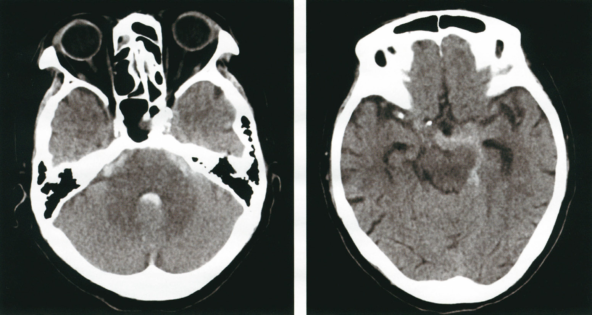
ａ 髄膜炎
ｂ 片頭痛
ｃ 脳幹出血
ｄ くも膜下出血
ｅ 急性硬膜下血腫
✅
d くも膜下出血
雷鳴頭痛（突然の激しい頭痛）＋嘔吐→くも膜下出血（SAH）
理解度：
📝 メモ
📋 頭痛の鑑別
| 疾患 | 頭痛の特徴 |
| くも膜下出血 | 雷鳴（突然激しい）＋嘔吐・項部硬直 |
| 片頭痛 | 拍動性・前兆あり・悪心 |
| 緊張型頭痛 | 締め付け感・慢性 |
| 脳幹出血 | 意識障害・運動麻痺 |
| 硬膜下血腫 | 頭部外傷後の遅延性症状 |
Q.152(115D-39)★2択正答率 85%
歩行障害・見当識障害・尿失禁（3徴候）。診断に有用な検査はどれか。
ａ 脳 波
ｂ 脳血管撮影
ｃ 浸透圧利尿薬の負荷
ｄ MIBG 心筋シンチグラフィ
ｅ 脳脊髄液排出試験〈Tap test〉
✅
ｅ 脳脊髄液排出試験〈Tap test〉
正常圧水頭症の3徴→タップテスト（腰椎穿刺で髄液排出後に症状改善を確認）
理解度：
📝 メモ
🧠 正常圧水頭症
正常圧水頭症（NPH）：歩行障害・認知症・尿失禁の3徴。脳室拡大（シルビウス裂拡大）、正常髄液圧。診断：Tap test（腰椎穿刺→髄液排出→症状改善）。治療：脳室腹腔シャント（V-Pシャント）。🎯 国試ポイント
NPH＝3徴（歩行障害・認知症・尿失禁）＋タップテスト＋V-Pシャント。くも膜下出血後・髄膜炎後に続発性NPHが起こる。Q.153(114D-1)★正答率 94%
繰り返す片側性の一過性視力障害（黒内障）。診断に有用な診察・検査はどれか。
ａ 眼圧測定
ｂ 視野検査
ｃ 対光反射
ｄ 頸部の聴診
ｅ 眼球運動検査
✅
d 頸部の聴診
一過性黒内障（眼動脈TIA）→内頸動脈狭窄が原因→頸部聴診（血管雑音の確認）
理解度：
📝 メモ
🧠 一過性黒内障
一過性黒内障（amaurosis fugax）：片眼の一過性視力消失。内頸動脈狭窄→眼動脈（眼動脈は内頸動脈の最初の枝）への塞栓。診断：頸部聴診（颈動脈雑音）→頸動脈エコー・MRA・CT-A。Q.154(113A-35)★📷 画像正答率 51%
若年女性・突然の頭痛→意識障害。CT：くも膜下出血。行うべき治療はどれか。
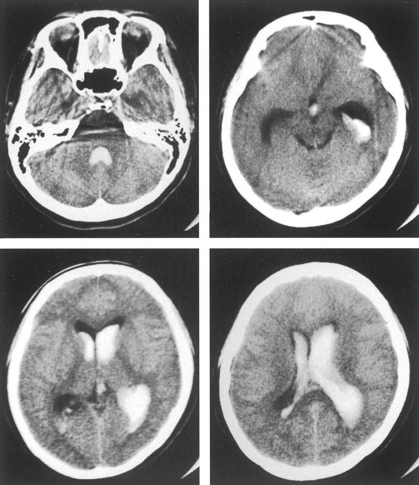
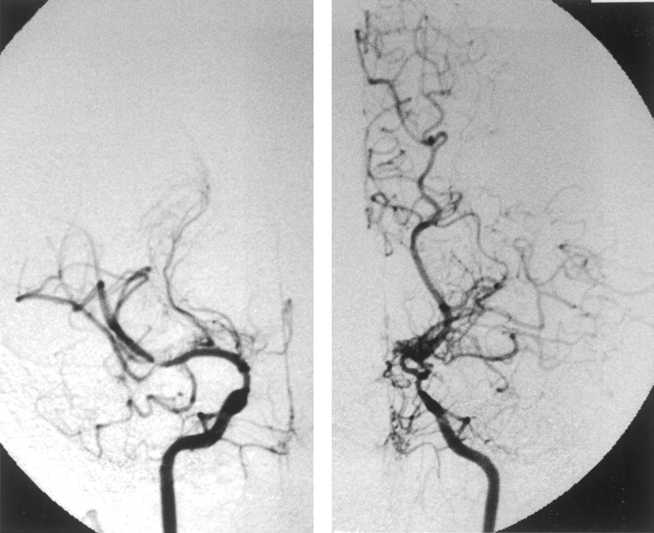
ａ 血行再建術
ｂ 血栓溶解療法
ｃ コイル塞栓術
ｄ ステント留置術
ｅ 脳室ドレナージ術
✅
e 脳室ドレナージ術
SAH後の急性水頭症（脳室拡大）→緊急脳室ドレナージ術
理解度：
📝 メモ
🧠 SAH急性期の水頭症
SAHの急性合併症：急性水頭症（脳脊髄液循環障害）→意識悪化。緊急対応：脳室ドレナージ術。動脈瘤治療（クリッピング・コイル塞栓）は並行して行う。Q.155(112A-31)★📷 画像2択正答率 83%
右眼充血・複視（2週間）。眼窩内充血・眼球突出。治療はどれか。

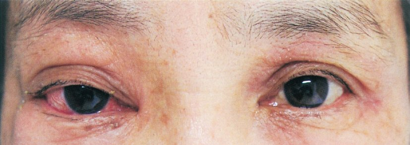
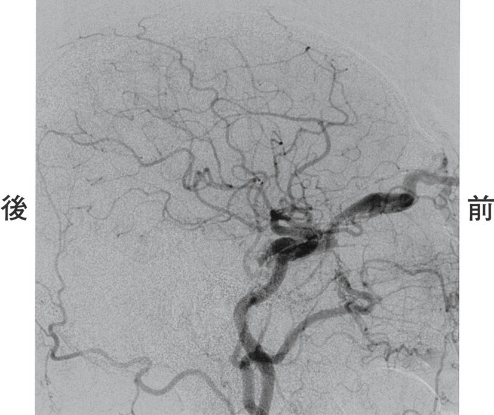
ａ 眼窩内腫瘍摘出術
ｂ 海綿静脈洞塞栓術
ｃ 脳動静脈奇形摘出術
ｄ 頸動脈ステント留置術
ｅ 脳動脈瘤頸部クリッピング術
✅
b 海綿静脈洞塞栓術
眼球突出＋結膜充血＋眼窩内雑音→CCF（頸動脈海綿静脈洞瘻）→血管内塞栓術
理解度：
📝 メモ
🧠 Q146参照
Q146と同テーマ。CCF（頸動脈海綿静脈洞瘻）→海綿静脈洞塞栓術（血管内治療）。Q.156(112E-42)★正答率 49%
くも膜下出血後。SpO2改善なし。気道管理の手技はどれか。
ａ 経口気管挿管
ｂ 経鼻気管挿管
ｃ 輪状甲状靱帯切開
ｄ 経鼻エアウェイ挿入
ｅ ラリンジアルマスク挿入
✅
a 経口気管挿管
用手気道確保無効→確実な気道確保→経口気管挿管が第一選択
理解度：
📝 メモ
🧠 気道確保の選択
挿管の優先順位：経口気管挿管（最も確実）。困難気道なら輪状甲状靱帯切開。ラリンジアルマスク・経鼻は緊急一次対応だが不十分。Q.157(112E-43)★正答率 56%
連問（PICO形式）。PICO でのOutcome（O）はどれか。
ａ 出血の増加
ｂ 心房細動の改善
ｃ 生命予後の延長
ｄ 入院機会の減少
ｅ 脳梗塞発症率の低下
✅
b 心房細動の改善
PICOのO（Outcome）：介入によって改善・変化が期待される結果。「心房細動の改善」が患者にとっての転帰
理解度：
📝 メモ
🧠 PICO構造
PICO：P（患者）・I（介入）・C（比較）・O（アウトカム）。本問では抗凝固薬再開の文脈で、O（アウトカム）＝心房細動の改善（または脳梗塞再発率低下・出血リスクの増加）。Q.158(111E-24)★3択正答率 40%
3D-CTA。血流障害で右下肢限局運動麻痺をきたす動脈はどれか（3択）。
ａ ①
ｂ ②
ｃ ③
ｄ ④
ｅ ⑤
✅
b ②
右下肢の運動野は大脳内側面（傍正中部）→前大脳動脈（ACA）が担う
理解度：
📝 メモ
🧠 前大脳動脈と下肢運動野
前大脳動脈（ACA）は大脳内側面（傍正中部）を栄養→下肢の運動・感覚野。ACA閉塞→対側下肢優位の麻痺（対麻痺）。MCAは上肢・顔面優位。Q.159(111E-44)★📷 画像4択正答率 77%
42歳女性。左片麻痺・意識障害。高血圧既往。造影MRI：血管奇形。治療はどれか（4択）。
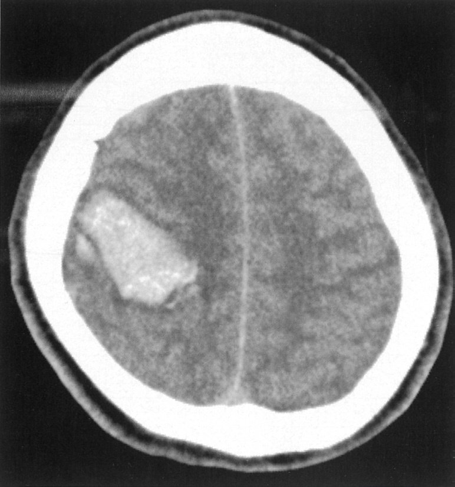
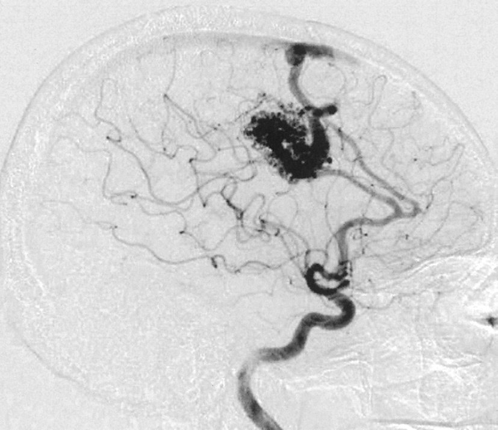
ａ 血栓溶解療法
ｂ 経皮血管形成術
ｃ ステント留置術
ｄ 脳動脈瘤塞栓術
ｅ 流入動脈塞栓術
✅
e 流入動脈塞栓術
脳動静脈奇形（AVM）→流入動脈の塞栓術（血管内治療）が治療選択肢の一つ
理解度：
📝 メモ
🧠 脳AVM
脳動静脈奇形（AVM）：動脈と静脈の間に異常な短絡路（nidus）。治療：外科的切除・ガンマナイフ・血管内塞栓（流入動脈塞栓）。出血・けいれんで発症。Q.160(111I-68)★📷 画像2択正答率 87%
12歳男児。熱いもの食べると脱力→もやもや病。治療はどれか（2択）。
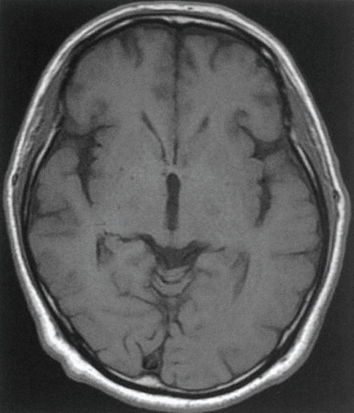
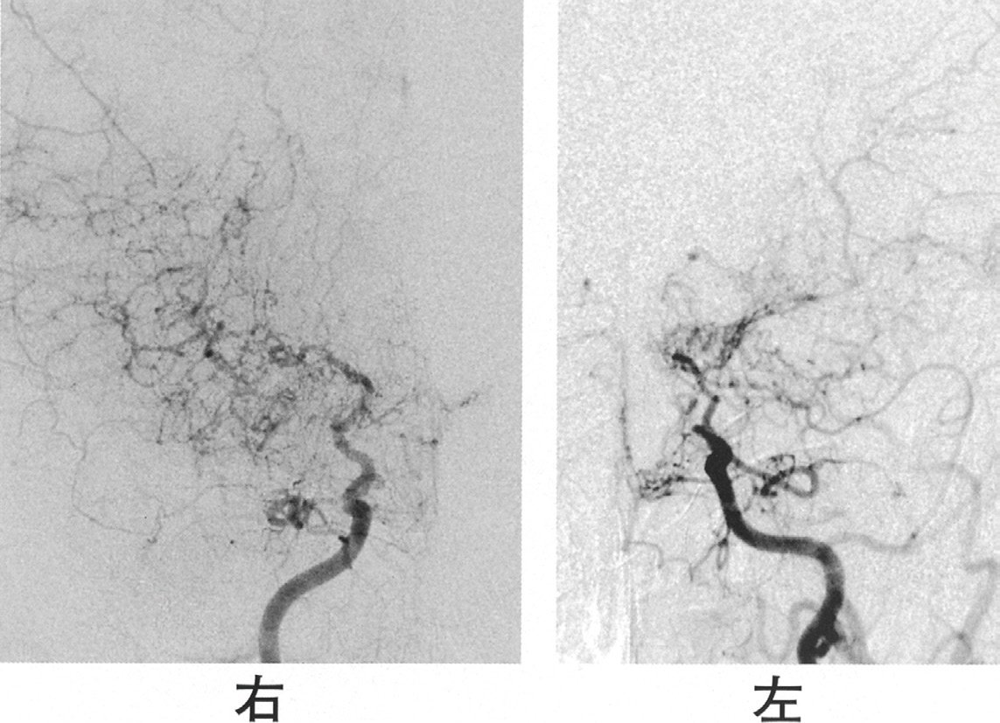
ａ 血行再建術
ｂ 腫瘍摘出術
ｃ 動脈塞栓術
ｄ 血栓溶解療法
ｅ ステント留置術
✅
a 血行再建術
もやもや病の外科治療：血行再建術（間接・直接バイパス術）
理解度：
📝 メモ
🧠 もやもや病
もやもや病：内頸動脈終末部の進行性閉塞→側副血行路形成（煙突状血管＝もやもや）。小児：脳虚血（過換気で誘発→麺をすするなど）、成人：脳出血。治療：血行再建術（STA-MCA吻合等）。🎯 国試ポイント
もやもや病：過換気で虚血発作→血行再建術。熱いものを食べる・泣くときの過換気に注意。Q.161(110B-49)★📷 画像3択正答率 46%
TIA疑い。行うべき検査はどれか。3つ選べ。
ａ 足関節上腕血圧比〈ABI〉測定
ｂ 頸動脈エコー検査
ｃ Holter 心電図
ｄ 心エコー検査
ｅ 脳 波
✅
ｂ 頸動脈エコー検査
ｃ Holter 心電図
ｄ 心エコー検査
ｃ Holter 心電図
ｄ 心エコー検査
TIA後の脳梗塞リスク評価：塞栓源（心臓・頸動脈）の検索が必須
理解度：
📝 メモ
📋 TIA後の検査
| 検査 | 目的 |
| 足関節上腕血圧比（ABI） | 末梢動脈疾患の診断（TIA直接評価ではない） |
| 頸動脈エコー | アテローム（頸動脈狭窄）の検索 |
| Holter心電図 | 心房細動の検出 |
| 心エコー | 心臓内血栓・弁膜症の評価 |
| 脳波 | てんかんの評価（TIA鑑別用） |
Q.162(110I-73)★📷 画像正答率 97%
高齢女性。右片麻痺・意識障害。頭部MRI（連問）。原因はどれか。
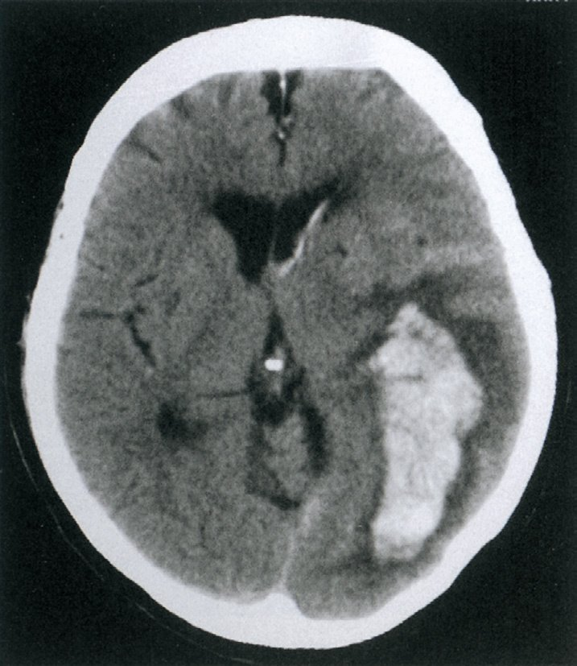
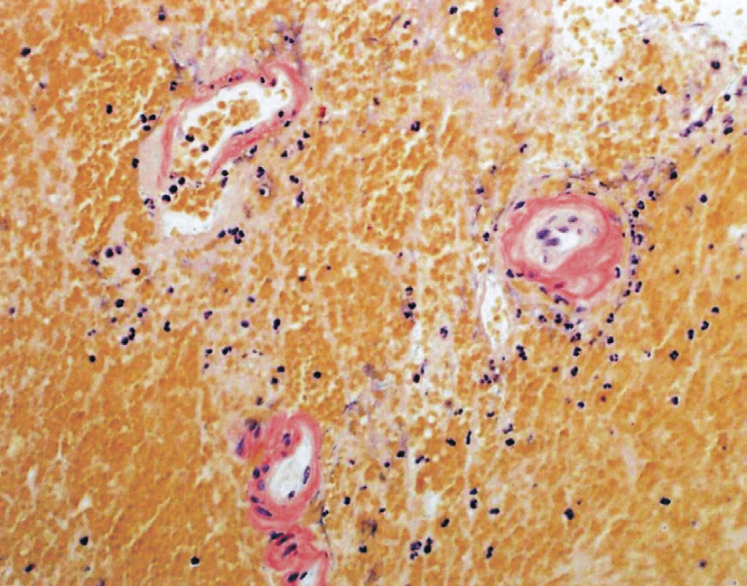
ａ 高血圧症
ｂ 脳動脈瘤
ｃ 脳動静脈奇形
ｄ 抗リン脂質抗体症候群
ｅ アミロイドアンギオパチー
✅
e アミロイドアンギオパチー
MRIで皮質下多発出血・高齢者・認知症関連→脳アミロイドアンギオパチー
理解度：
📝 メモ
🧠 脳アミロイドアンギオパチー
脳アミロイドアンギオパチー（CAA）：アミロイドβの血管壁沈着→脳表・皮質下の反復出血。高齢者、認知症との関連。MRI：皮質下多発微小出血（GRE/SWI像）。抗凝固薬が禁忌となる場合も。Q.163(106A-39)★正答率 53%
SAH発症1週後、意識変容・局所神経症状。考えられる病態はどれか。
ａ 出血性脳梗塞
ｂ 正常圧水頭症
ｃ 脳血管攣縮
ｄ 脳室内出血
ｅ 小脳出血
✅
c 脳血管攣縮
SAH後4〜14日→脳血管攣縮による遅発性脳虚血（DCI）
理解度：
📝 メモ
🧠 Q144参照
Q144と同テーマ。SAH後4〜14日→脳血管攣縮→意識悪化・局所神経症状（片麻痺・失語）。Ca拮抗薬で予防。Q.164(105G-36)★3択正答率 36%
Willis 動脈輪を構成するのはどれか。3つ選べ。
ａ 内頸動脈
ｂ 前大脳動脈
ｃ 中大脳動脈
ｄ 後大脳動脈
ｅ 椎骨動脈
✅
ａ 内頸動脈
ｂ 前大脳動脈
ｄ 後大脳動脈
ｂ 前大脳動脈
ｄ 後大脳動脈
Willis輪：内頸動脈＋前大脳動脈＋前交通動脈＋後交通動脈＋後大脳動脈
理解度：
📝 メモ
🧠 Willis動脈輪
Willis動脈輪（大脳動脈輪）：・内頸動脈（両側）
・前大脳動脈（A1部）＋前交通動脈
・後大脳動脈（P1部）＋後交通動脈
中大脳動脈・椎骨動脈はWillis輪の構成要素ではない
Q.165(104E-30)★
頸部MRA。矢印で示す血管はどれか。
ａ 外頸動脈
ｂ 総頸動脈
ｃ 椎骨動脈
ｄ 内頸動脈
ｅ 後頭動脈
✅
d 内頸動脈
頸部MRAで蛇行して頭蓋内に向かう太い血管→内頸動脈
理解度：
📝 メモ
🧠 頸部血管の解剖
頸部MRAで確認できる主な動脈：・総頸動脈：外頸・内頸動脈に分岐
・内頸動脈：頭蓋内へ直走（外頸動脈より細い）
・椎骨動脈：頸椎横突孔内を上行
Q.166(102I-13)★
脳出血で四肢麻痺をきたす可能性があるのはどれか。
ａ 橋出血
ｂ 被殻出血
ｃ 視床出血
ｄ 小脳出血
ｅ 尾状核出血
✅
a 橋出血
橋出血→両側の錐体路障害→四肢麻痺＋高体温・除脳硬直
理解度：
📝 メモ
🧠 橋出血の特徴
橋出血：両側の錐体路が橋で近接→四肢麻痺（対麻痺も）。特徴：針様瞳孔（縮瞳）・高体温・除脳硬直。被殻・視床出血：片麻痺。Q.167(96E-40)★
くも膜下出血で特徴的でないのはどれか。
ａ 悪心・嘔吐
ｂ 突発性発症
ｃ 激しい頭痛
ｄ 片麻痺
ｅ 項部硬直
✅
d 片麻痺
くも膜下出血の典型症状：雷鳴頭痛・嘔吐・項部硬直。片麻痺はSAH自体には特徴的でない
理解度：
📝 メモ
🧠 SAHの症状
SAH典型症状：雷鳴頭痛・悪心嘔吐・項部硬直（髄膜刺激）・意識障害。片麻痺はSAH自体には典型的ではない（血管攣縮・血腫による続発）。Q.168(95G-43)★
右片麻痺。CT：出血性梗塞像。診断はどれか。
ａ 膠芽腫
ｂ 脳出血
ｃ くも膜下出血
ｄ 出血性脳梗塞
ｅ 単純ヘルペス脳炎
✅
d 出血性脳梗塞
虚血後再灌流による出血性変化→出血性脳梗塞。CTで不整形な高吸収域
理解度：
📝 メモ
🧠 出血性脳梗塞
出血性脳梗塞：脳梗塞（特に心原性塞栓）の梗塞巣内への出血性変化。CTで不整形な高吸収域（出血）内に低吸収（梗塞）が混在。血栓溶解・再疎通後に起こりやすい。無
A/B 問題（無印）
Q.169〜Q.243
Q.169(118E-28)正答率 87%
英語問題。意識障害の男性。まず行う検査はどれか。
ａ head CT
ｂ brain MRI
ｃ serum alcohol level
ｄ serum ammonia level
ｅ electroencephalogram
✅
a head CT
意識障害→まず頭部CT（出血・梗塞の鑑別）
理解度：
📝 メモ
🧠 意識障害の初期検査
意識障害患者の初期対応：頭部CT（非造影）→出血（高吸収）・大梗塞（低吸収）・硬膜下血腫などを鑑別。Q.170(118E-41)正答率 97%
連問。GCS評価はどれか。（118E-40）
ａ E4 V5 M5
ｂ E4 V4 M5
ｃ E3 V4 M4
ｄ E3 V2 M5
ｅ E3 V2 M4
✅
d E3 V2 M5
臨床像から E3（呼びかけで開眼）+V2（うなり声）+M5（払いのける）=10点
理解度：
📝 メモ
🧮 GCS計算
Q9・Q41参照。本連問の臨床像から：E3（呼びかけで開眼）＋V2（うなり声）＋M5（払いのける）= 10点
Q.171(118E-42)📷 画像正答率 99%
連問。まず行う検査はどれか。
ａ 脳波検査
ｂ 頭部単純CT
ｃ 脳脊髄液検査
ｄ 頭部単純MRI
ｅ 脳シングルフォトンエミッションCT〈SPECT〉
✅
b 頭部単純CT
意識障害・神経症状→まず頭部CT（出血/梗塞の鑑別）
理解度：
📝 メモ
🧠 Q169参照
神経学的緊急症の初期検査は頭部単純CT。出血（高吸収）の迅速判定が重要。MRIより早く施行可能。Q.172(117D-34)📷 画像正答率 95%
失神後頭部打撲。CT：脳動脈瘤を示す所見（連問）。治療はどれか。
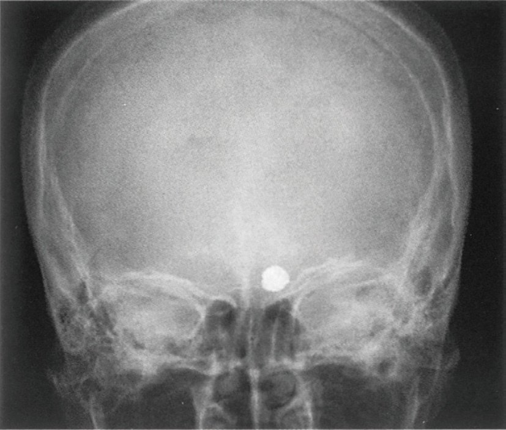
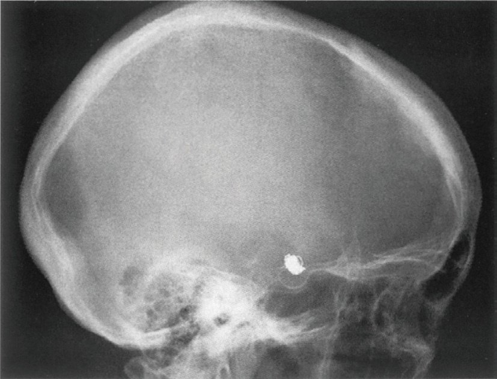
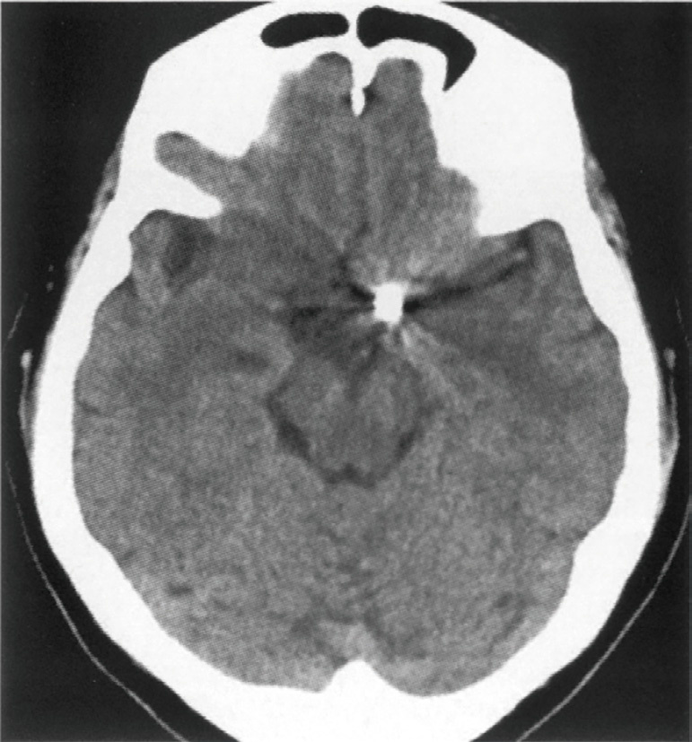
ａ ステント留置術
ｂ 脳室・腹腔短絡術
ｃ 穿頭血腫ドレナージ術
ｄ 脳動脈瘤頸部クリッピング術
ｅ 脳動脈瘤に対するコイル塞栓術
✅
e 脳動脈瘤に対するコイル塞栓術
未破裂脳動脈瘤または破裂動脈瘤→コイル塞栓術（血管内治療）または開頭クリッピング術
理解度：
📝 メモ
🧠 脳動脈瘤の治療
脳動脈瘤の治療：・開頭クリッピング術：外科的に瘤頸部をクリップ
・コイル塞栓術（血管内治療）：カテーテルでコイルを充填→近年増加
Q.173(117D-42)2択正答率 76%
左内包脳梗塞（発症5日目）。背もたれ90度で端座位が可能。行うべきリハビリはどれか。
ａ 座位訓練
ｂ 右手での書字訓練
ｃ 左上肢の他動可動域訓練
ｄ 歩行器使用での歩行訓練
ｅ 手すりを使用しての階段昇降訓練
✅
a 座位訓練
端座位が「可能」→さらに安定させる座位訓練が次ステップ（立位・歩行はまだ早い）
理解度：
📝 メモ
🧠 リハビリの段階
急性期（発症5日目）：背もたれ座位OK→端座位訓練（安定化）→立ち上がり→立位→歩行の順で段階的に進める。Q.174(116A-61)正答率 97%
英語問題。64歳男性・左片麻痺。心電図所見。診断はどれか。
ａ Atrial fibrillation
ｂ Supraventricular tachycardia
ｃ Third-degree atrioventricular block
ｄ Ventricular fibrillation
ｅ Ventricular tachycardia
✅
ａ Atrial fibrillation
不整脈パターンから心房細動と判読→心原性脳塞栓の主因
理解度：
📝 メモ
🧠 心房細動と脳塞栓
心房細動（AF）：左心耳内血栓形成→脳塞栓症。心電図：P波消失＋不規則R-R間隔。治療：抗凝固薬（DOAC/ワルファリン）で塞栓予防。Q.175(116A-75)3択正答率 85%
左内包梗塞後右片麻痺。回復期リハ入院中。行うべきリハビリはどれか。3つ選べ。
ａ 更衣動作訓練
ｂ 右手での書字訓練
ｃ 右上肢の他動可動域訓練
ｄ 短下肢装具と杖使用での歩行訓練
ｅ リクライニング車椅子使用での座位訓練
✅
ａ 更衣動作訓練
ｃ 右上肢の他動可動域訓練
ｄ 短下肢装具と杖使用での歩行訓練
ｃ 右上肢の他動可動域訓練
ｄ 短下肢装具と杖使用での歩行訓練
右片麻痺に対して：拘縮予防（他動ROM）＋歩行（装具）＋ADL訓練（更衣）
理解度：
📝 メモ
🧠 回復期リハビリ
回復期（8週目）：右上肢の他動ROM（拘縮予防）＋短下肢装具＋杖での歩行訓練＋更衣などADL訓練。右手の書字訓練・立位は段階に応じて判断。Q.176(115A-58)正答率 92%
78歳女性・右片麻痺・意識障害（脳梗塞疑い）。正しいのはどれか。
ａ 出血性脳梗塞である。
ｂ 速やかに降圧薬を投与する。
ｃ 直ちに右頸動脈ステント留置を行う。
ｄ 早期にリハビリテーションを開始する。
ｅ t-PA〈tissue plasminogen activator〉療法の適応である。
✅
d 早期にリハビリテーションを開始する。
脳梗塞では早期リハビリ開始が機能回復に重要（誤嚥性肺炎・拘縮予防）
理解度：
📝 メモ
🧠 脳卒中後の早期リハビリ
早期リハビリ開始（急性期から）：廃用予防・拘縮予防・誤嚥性肺炎予防・機能回復促進。t-PA適応：発症時刻不明（就寝中）→not indicated。急速な降圧は梗塞拡大リスクがある。Q.177(115D-48)正答率 75%
脳梗塞後右片麻痺1か月。Brunnstrom stage III。行うべき訓練はどれか。
ａ 三角巾使用による右上肢固定
ｂ 長下肢装具使用での歩行訓練
ｃ 日常生活における右手使用の指導
ｄ 環境制御装置を用いたナースコール
ｅ 文字盤使用によるコミュニケーション
✅
c 日常生活における右手使用の指導
Brunnstrom III（共同運動）→患肢を積極的にADLに使用させる訓練が重要
理解度：
📝 メモ
🧠 Brunnstrom stage
Brunnstrom stage III：随意的共同運動が可能。患側（右）上肢を日常生活で積極的に使用させることで機能改善。CI療法（constraint-induced movement therapy）の考え方。Q.178(115E-40)📷 画像正答率 89%
右片麻痺・言語障害（発症1〜2時間以内）。心電図（心房細動）。治療はどれか。
ａ β遮断薬
ｂ ベラパミル
ｃ 塩化カリウム
ｄ 副腎皮質ステロイド
ｅ t-PA〈tissue plasminogen activator〉
✅
ｅ t-PA〈tissue plasminogen activator〉
発症2時間以内・脳梗塞→t-PA（アルテプラーゼ）静注血栓溶解療法
理解度：
📝 メモ
🧠 t-PA適応
t-PA（アルテプラーゼ）適応：発症4.5時間以内・虚血性脳卒中・禁忌なし。投与量：0.6mg/kg（最大60mg）静注。禁忌：最近の手術・出血傾向・SBP>185等。Q.179(114B-18)正答率 78%
脳梗塞を最も示唆する問診内容はどれか。
ａ 「以前に同じような症状があった」
ｂ 「症状の出現は突然であった」
ｃ 「症状の変動はなかった」
ｄ 「頭痛は伴わなかった」
ｅ 「発熱はなかった」
✅
b 「症状の出現は突然であった」
脳梗塞の特徴：突然発症（血管閉塞）。進行性悪化はSAHや腫瘍
理解度：
📝 メモ
🧠 脳梗塞の問診
突然発症は脳血管障害（梗塞・出血・SAH）に特徴的。TIAの既往は脳梗塞リスクを高めるが必ずしも梗塞を示唆しない。頭痛のない突然の神経症状→脳梗塞。Q.180(114B-34)正答率 97%
突然の激しい頭痛・悪心・嘔吐。意識清明。最も考えられるのはどれか。
ａ 髄膜炎
ｂ 脳梗塞
ｃ 片頭痛
ｄ 緊張型頭痛
ｅ 脳動脈瘤破裂
✅
e 脳動脈瘤破裂
雷鳴頭痛（suddenly worst headache）→脳動脈瘤破裂によるSAH
理解度：
📝 メモ
🧠 SAHの典型症状
Q151と同テーマ。SAH＝雷鳴頭痛（突然の「今まで経験したことのない」激しい頭痛）。悪心・嘔吐・項部硬直。脳動脈瘤破裂が最多（80%以上）。Q.181(114B-38)📷 画像正答率 97%
めまい・頭痛・嘔吐→意識障害。CT：小脳出血。使用する薬剤はどれか。
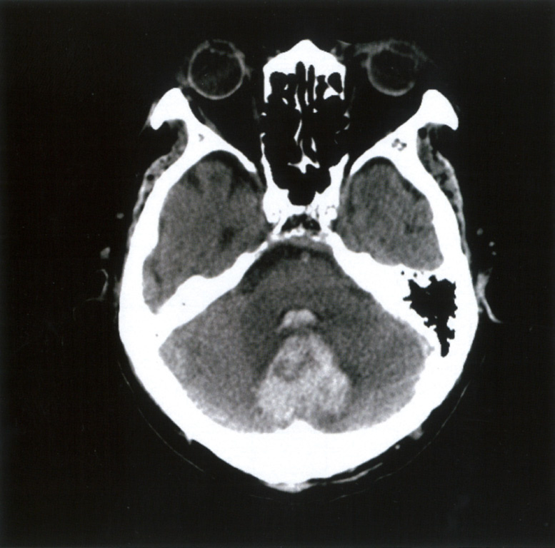
ａ t-PA
ｂ モルヒネ
ｃ カルシウム拮抗薬
ｄ 重炭酸ナトリウム
ｅ 副腎皮質ステロイド
✅
c カルシウム拮抗薬
小脳出血急性期→脳圧亢進対策として血圧管理（Ca拮抗薬）
理解度：
📝 メモ
🧠 小脳出血
小脳出血：突然のめまい・頭痛・嘔吐・体幹失調。急速に悪化→脳幹圧迫・水頭症のリスク。治療：血圧管理（Ca拮抗薬）＋血腫量>15mLや脳幹圧迫では外科的血腫除去。Q.182(114C-66)正答率 93%
連問。病巣として考えにくいのはどれか。（114C-66）
ａ 橋
ｂ 海 馬
ｃ 頭頂葉
ｄ 小脳半球
ｅ 脊髄後索
✅
e 脊髄後索
連問の患者の神経所見から脊髄後索病変は考えにくい（脳血管障害の文脈）
理解度：
📝 メモ
🧠 鑑別
連問（114C）の患者は脳卒中関連の評価。脊髄後索病変は脊髄疾患（B₁₂欠乏・梅毒等）→この文脈では考えにくい。Q.183(114C-67)正答率 88%
連問（CGA7）。CGA7の評価に必要な項目で読み取れないのはどれか。
ａ 意 欲
ｂ 情 緒
ｃ 認知機能
ｄ 基本的ADL
ｅ 手段的ADL
✅
b 情 緒
CGA7は意欲・認知機能・ADL（基本的・手段的）・転倒リスク等を評価。情緒は含まない
理解度：
📝 メモ
🧠 CGA7
CGA7（高齢者機能評価簡易版）：意欲・認知機能・基本的ADL・手段的ADL・転倒リスク・栄養状態・排泄を評価（7項目）。情緒・気分は含まない（GDS等で別途評価）。Q.184(114C-68)正答率 90%
連問（114C-68）。異常を示す可能性が高い検査はどれか。
ａ 嗅覚検査
ｂ 針筋電図
ｃ 膀胱内圧
ｄ 純音聴力検査
ｅ 体性感覚誘発電位
✅
d 純音聴力検査
連問の患者背景（脳幹・CN VIII関連）から聴力障害を推定→純音聴力検査
理解度：
📝 メモ
🧠 聴力検査
連問（114C）：脳幹/脳神経障害を示唆する所見がある患者。純音聴力検査でCN VIII（聴神経）の機能を評価。Q.185(113D-52)正答率 88%
直腸癌手術前リハ。脳梗塞既往（嚥下障害の可能性）。術前に行う評価はどれか。
ａ 脳 波
ｂ 嚥下機能検査
ｃ 重心動揺検査
ｄ 針筋電図検査
ｅ 顔面神経伝導検査
✅
b 嚥下機能検査
脳梗塞後の嚥下障害→手術前に嚥下機能評価（誤嚥性肺炎のリスク）
理解度：
📝 メモ
🧠 術前嚥下評価
脳卒中後の嚥下障害（球麻痺・仮性球麻痺）は術後誤嚥性肺炎リスク。術前に嚥下機能検査（VF・VE）で評価→食事形態・嚥下訓練計画を立てる。Q.186(112C-34)正答率 92%
左視床出血後6週。右上下肢障害。退院に向けた訓練として適切なのはどれか。
ａ キーボードを見ずに右手でパソコン入力を行う。
ｂ 閉眼したまま右下肢で片足立ちを保持する。
ｃ 長下肢装具を用いた移乗動作を行う。
ｄ 介助を受けてズボンの上げ下ろしを行う。
ｅ 短下肢装具とT 字杖とを用いて歩行する。
✅
ｅ 短下肢装具とT 字杖とを用いて歩行する。
視床出血後の右片麻痺→短下肢装具（AFO）＋T字杖での歩行訓練が実用的
理解度：
📝 メモ
🧠 視床出血後リハビリ
視床出血：反対側感覚障害＋運動障害。右片麻痺の歩行訓練：短下肢装具（AFO）＋T字杖（最も現実的な歩行補助）。感覚フィードバックを使った閉眼訓練は後索障害向き。Q.187(112E-36)📷 画像正答率 71%
4日前の突然頭痛（sentinel headache相当）。CT正常だが髄液キサントクロミア。次に行う検査はどれか。
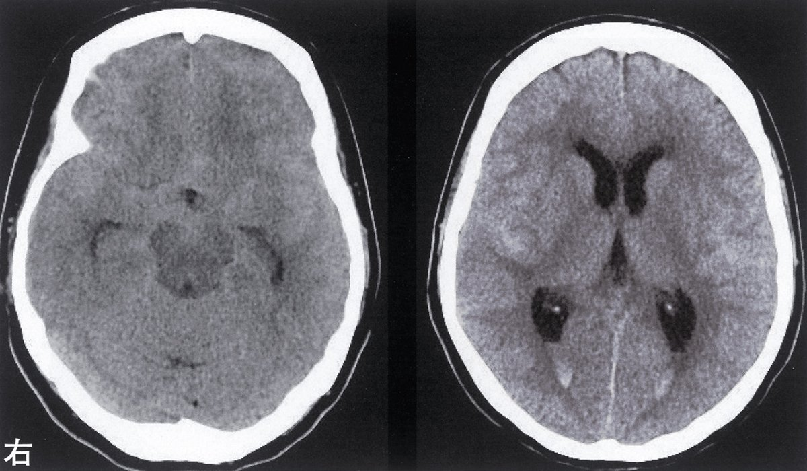
ａ 脳 波
ｂ 脳血管造影検査
ｃ 脳脊髄液培養検査
ｄ 頭部MRI 拡散強調像撮像
ｅ インフルエンザウイルス迅速抗原検査
✅
b 脳血管造影検査
SAH確定（キサントクロミア）→動脈瘤同定のため脳血管造影（DSA）
理解度：
📝 メモ
🧠 SAHの診断
CT陰性でもキサントクロミア（髄液黄色調）＝SAHの確定診断。原因動脈瘤の同定・治療計画のために脳血管造影（DSA）または3D-CTAを施行。Q.188(111B-5)正答率 98%
脳卒中後の早期リハで予防できるのはどれか。
ａ 不整脈
ｂ 関節拘縮
ｃ 消化性潰瘍
ｄ 脳卒中再発
ｅ 大腿骨頸部骨折
✅
b 関節拘縮
早期リハビリ→廃用・拘縮予防。脳卒中再発は薬物療法で予防
理解度：
📝 メモ
🧠 早期リハビリの目的
早期リハビリの主な効果：拘縮予防・廃用症候群予防・誤嚥性肺炎予防。脳卒中再発予防は抗血小板・抗凝固薬。大腿骨頸部骨折予防は転倒対策。Q.189(111H-31)📷 画像正答率 85%
連問（111H）。回復経過を評価する上で最も有用なのはどれか。
ａ しびれ感の強さ
ｂ 筋 力
ｃ D ダイマー値
ｄ PT-INR
ｅ 頭部CT
✅
b 筋 力
回復期の機能評価では筋力（運動機能）が最も直接的に回復指標となる
理解度：
📝 メモ
🧠 回復期評価指標
回復期リハビリ：筋力（MMT）・Brunnstrom stage・Barthel index等で機能回復を評価。Dダイマー・PT-INRは凝固系。頭部CTは形態的評価。Q.190(111H-32)正答率 97%
連問。退院後の生活目標として最も重要な情報はどれか。
ａ 服用中の薬
ｂ 再発のリスク
ｃ 頭部MRI の所見
ｄ 患者が望む生活像
ｅ 転院時の感覚障害
✅
d 患者が望む生活像
患者中心のリハビリ目標設定では「患者の意向・望む生活」が最重要
理解度：
📝 メモ
🧠 患者中心の医療
患者の望む生活像（goal）を中心にリハビリ計画を立てる。服用薬・再発リスク・MRI所見も重要だが、患者の価値観・目標が最優先。Q.191(110D-46)正答率 95%
易転倒性・認知症・尿失禁（3徴）。MRI：脳室拡大。治療はどれか。
ａ 深部脳刺激療法
ｂ ドネペジル内服
ｃ 脳室腹腔短絡術
ｄ メマンチン内服
ｅ レボドパ〈L-dopa〉内服
✅
ｃ 脳室腹腔短絡術
NPH（正常圧水頭症）→タップテスト→確定診断→脳室腹腔シャント
理解度：
📝 メモ
🧠 Q152参照
Q152と同テーマ。NPH→V-Pシャント（脳室腹腔短絡術）で髄液ドレナージ→3徴の改善。ドネペジル・メマンチンはAlzheimer用。深部脳刺激はParkinson病。Q.192(110E-56)📷 画像正答率 97%
2週前に右片麻痺・失語が1時間で完全回復（TIA）。産業医としての対応はどれか。
ａ 「今すぐ専門医に連れて行ってもらってください」
ｂ 「時間があるときに医療機関を受診してください」
ｃ 「出勤して良いですが運転はしないでください」
ｄ 「今までどおり勤務を続けて大丈夫です」
ｅ 「自宅で休んでください」
✅
ａ 「今すぐ専門医に連れて行ってもらってください」
TIAは脳梗塞の前駆症状→2日以内に高率で脳梗塞発症→緊急専門医紹介
理解度：
📝 メモ
🧠 TIAの緊急性
TIA（一過性脳虚血発作）は脳梗塞の前駆症状。ABCD²スコアが高ければ2日以内の脳梗塞リスクが10%以上。→緊急専門医受診が必要（時間の猶予なし）。🎯 国試ポイント
TIA→緊急専門医受診（今すぐ）。自宅安静・様子見は不適。TIAは「脳梗塞の1〜2日前の警告」として扱う。Q.193(110F-19)📷 画像正答率 73%
連問（110I）。脳梗塞急性期（発症3日目）のリハビリはどれか。
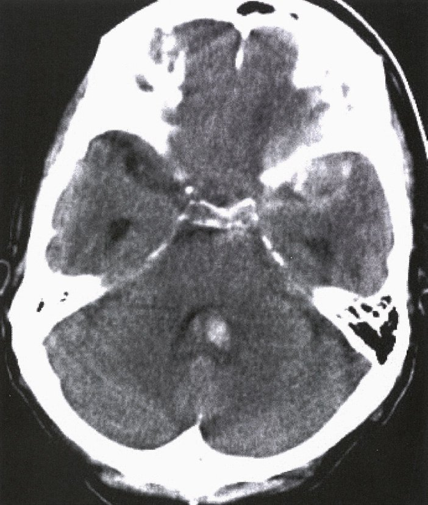
ａ 経過観察
ｂ 腰椎穿刺
ｃ 止血薬静注
ｄ 降圧薬内服
ｅ 頭部CT 血管造影検査
✅
ｅ 頭部CT 血管造影検査
発症3日目・急性期→段階的坐位訓練から開始（ベッドアップ→端坐位）
理解度：
📝 メモ
🧠 Q173・Q234参照
急性期（3日目）は段階的な坐位訓練から。立位・歩行は安定してから。Q.194(110G-51)正答率 89%
55歳男性。TIA（右上肢脱力・ろれつ困難）。左頸部に血管雑音。右頸動脈狭窄70%。治療はどれか。
ａ 動脈塞栓術
ｂ 血栓溶解療法
ｃ 脳動脈瘤塞栓術
ｄ 頸動脈内膜剝離術
ｅ 頸動脈ステント留置術
✅
e 頸動脈ステント留置術
症候性内頸動脈狭窄（>50%）＋高齢・合併症→CEAかCAS（本問はCASを選ぶ）
理解度：
📝 メモ
🧠 症候性内頸動脈狭窄の治療
症候性内頸動脈高度狭窄（>50%）：頸動脈内膜切除術（CEA）が標準。血管内治療（頸動脈ステント留置術：CAS）は高齢者・心肺機能不良・CEA困難例に選択。Q202・Q203参照。Q.195(110I-10)正答率 64%
急性期脳梗塞に対するt-PA投与が禁忌となる検査値はどれか。
ａ 血糖200mg/dL
ｂ 血小板15 万/mm3
ｃ 収縮期血圧180mmHg
ｄ PT-INR 2.0（基準0.9 ～1.1）
ｅ NIHSS〈NIH stroke scale〉20/42 点
✅
ｄ PT-INR 2.0（基準0.9 ～1.1）
ワルファリン服用でPT-INR≥1.7はt-PA禁忌→PT-INR 2.0は禁忌
理解度：
📝 メモ
🧠 t-PAの禁忌となる検査値
t-PA（アルテプラーゼ）の禁忌：・PT-INR≥1.7（抗凝固薬服用）
・血小板数<10万/mm³
・血糖50未満または400超
・血圧185/110mmHg以上
選択肢：血糖200・血小板15万・収縮期血圧180・NIHSS（重症度）は禁忌ではない。
Q.196(109B-27)2択正答率 88%
脳血管障害とその治療の組み合わせで適切なのはどれか。
ａ もやもや病 ―――――――――― 動脈塞栓術
ｂ ラクナ梗塞 ―――――――――― 経皮血管形成術〈PTA〉
ｃ くも膜下出血 ――――――――― 動脈瘤塞栓術
ｄ 心原性脳塞栓 ――――――――― 頸動脈内膜剝離術
ｅ 高血圧性脳出血 ―――――――― 血栓溶解療法
✅
ｃ くも膜下出血 ――――――――― 動脈瘤塞栓術
くも膜下出血（動脈瘤）→コイル塞栓術または開頭クリッピング術
理解度：
📝 メモ
🧠 脳血管障害の治療（まとめ）
| 疾患 | 治療 |
| もやもや病 | 血行再建術（バイパス） |
| ラクナ梗塞 | 抗血小板薬 |
| くも膜下出血（動脈瘤） | コイル塞栓術・開頭クリッピング |
| 心原性脳塞栓 | 抗凝固薬 |
| 高血圧性脳出血 | 保存的（大きければ手術） |
Q.197(109F-22)正答率 98%
48歳女性。2日前に突然の頭痛→軽快→本日再び後頭部痛＋嘔吐。SAH疑い。まず行う検査はどれか。
ａ 脳 波
ｂ 腰椎穿刺
ｃ 頭部MRI
ｄ 脳血管造影
ｅ 頭部単純CT
✅
e 頭部単純CT
SAH疑い→まず頭部単純CT（SAHは急性期CT高感度・迅速）
理解度：
📝 メモ
🧠 SAH疑いの初期検査
SAH疑い→まず頭部単純CT（SAH検出感度：発症12時間以内は95%以上）。CT陰性でも疑い強ければ腰椎穿刺（キサントクロミア）。MRIより迅速に施行可能。脳波は不要（SAH診断に使わない）。Q187参照。Q.198(109I-21)正答率 89%
脳梗塞に対してt-PAによる血栓溶解療法を行う際、事前に確認する必要がないのはどれか。
ａ 血小板数
ｂ 頭部単純CT
ｃ 動脈血ガス分析
ｄ 頭蓋内出血の既往歴
ｅ PT-INR〈prothrombin time-international normalized ratio〉
✅
c 動脈血ガス分析
t-PA投与前の確認事項：血小板数・PT-INR・CT・血圧・頭蓋内出血歴。動脈血ガスは確認不要
理解度：
📝 メモ
🧠 t-PA前の確認事項
t-PA投与前に確認すること：血小板数（<10万禁忌）・PT-INR（≥1.7禁忌）・頭部CT（出血除外）・血圧（>185禁忌）・頭蓋内出血の既往。動脈血ガス分析はt-PAの適否判断に不要（酸素化の評価には有用だが、投与の適否に直接関係しない）。Q.199(108E-46)📷 画像正答率 91%
88歳女性。脳梗塞後、経管栄養中に嘔吐→発熱・呼吸困難。胸部CT（連問）。診断はどれか。
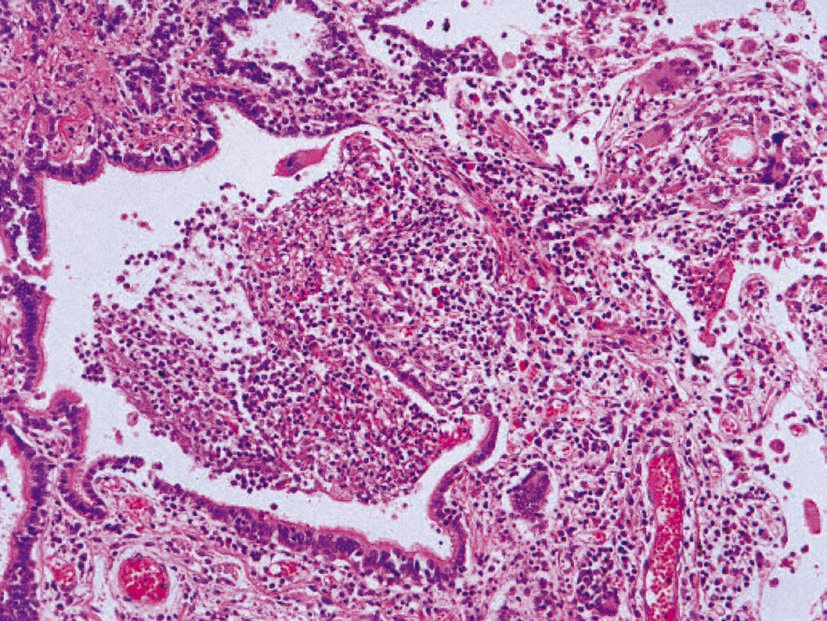
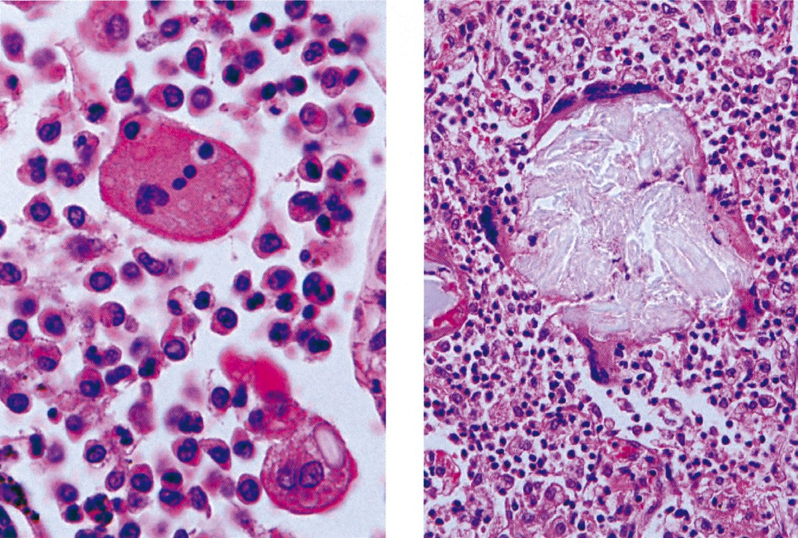
ａ 肺水腫
ｂ 肺腺癌
ｃ 嚥下性肺炎
ｄ 気管支拡張症
ｅ 特発性肺線維症
✅
c 嚥下性肺炎
脳梗塞後嚥下障害＋嘔吐→誤嚥→嚥下性肺炎（誤嚥性肺炎）
理解度：
📝 メモ
🧠 Q225参照
Q225と同テーマ。脳梗塞後の嚥下障害→嚥下性（誤嚥性）肺炎。高齢・球麻痺患者では特に注意。口腔ケア・嚥下訓練・食形態調整が予防。Q.200(108E-58)2択正答率 92%
72歳男性。繰り返す右上下肢脱力（TIA）。左頸部で血管雑音。左内頸動脈狭窄80%。治療はどれか。2つ選べ。
ａ 動脈塞栓術
ｂ 血栓溶解療法
ｃ 動脈瘤塞栓術
ｄ 頸動脈内膜剝離術
ｅ 頸動脈ステント留置術
✅
ｄ 頸動脈内膜剝離術
ｅ 頸動脈ステント留置術
ｅ 頸動脈ステント留置術
症候性内頸動脈高度狭窄（>50%）→CEAまたはCAS（どちらも適応）
理解度：
📝 メモ
🧠 Q194参照
Q194と同テーマ。症候性内頸動脈高度狭窄：CEA（頸動脈内膜剥離術）またはCAS（頸動脈ステント）が適応。血栓溶解療法は急性脳梗塞の治療であり予防ではない。Q.201(108I-25)4択正答率 64%
連問（107G-51）。行うべき治療はどれか。
ａ ①
ｂ ②
ｃ ③
ｄ ④
ｅ ⑤
✅
ｂ ②
脳血管障害の治療選択
理解度：
📝 メモ
🧠 治療選択
脳梗塞急性期：t-PA（4.5h以内）・機械的血栓回収（24h以内）。慢性期：抗血栓・危険因子管理。Q.202(107E-27)正答率 60%
脳血管障害による片麻痺患者のリハビリテーションで最も大きな阻害因子となるのはどれか。
ａ 痙 縮
ｂ 全失語
ｃ 構成失行
ｄ 尖足変形
ｅ 肩手症候群
✅
b 全失語
全失語は言語理解も産生も障害→リハビリの指示が通じない→機能回復の最大阻害因子
理解度：
📝 メモ
🧠 リハビリの阻害因子
全失語：Broca失語（運動性）もWernicke失語（感覚性）も含む。言語理解が障害される（全失語・感覚性失語）とリハビリの指示が伝わらない→機能回復の最大阻害因子。痙縮・尖足・肩手症候群は対応可能。失行も問題だが全失語ほどではない。Q.203(107G-57)正答率 87%
連問（107G-57続き）。内頸動脈狭窄の血管内治療。
ａ 硬化療法
ｂ 動脈塞栓術
ｃ 血栓溶解療法
ｄ ステント留置術
ｅ フィルター留置術
✅
ｄ ステント留置術
内頸動脈狭窄のTIA→CAS（頸動脈ステント留置術）または CEA
理解度：
📝 メモ
🧠 Q202参照
Q202と同テーマ。症候性内頸動脈狭窄の血管内治療＝頸動脈ステント留置術（CAS）。Q.204(107H-37)正答率 96%
仕事中に倒れた中年男性。緊急度を判定する徴候はどれか。
ａ 下顎反射
ｂ 対光反射
ｃ 輻輳反応
ｄ 膝蓋腱反射
ｅ Babinski 徴候
✅
ｂ 対光反射
突然の意識障害→SAH・脳卒中を疑う。頸部硬直・瞳孔所見が緊急度を示す
理解度：
📝 メモ
🧠 SAH発見時の評価
くも膜下出血（SAH）の緊急徴候：急激な意識障害・呼吸異常・瞳孔異常（動眼神経麻痺）・項部硬直。Q.205(107H-38)正答率 94%
くも膜下出血の診断に関する問。正しいのはどれか。
ａ 動脈瘤
ｂ 塞栓子
ｃ 脳幹出血
ｄ 動静脈奇形
ｅ くも膜下出血
✅
ｅ くも膜下出血
SAHの診断：頭部CT→陰性なら腰椎穿刺（キサントクロミア確認）
理解度：
📝 メモ
🧠 SAH診断
SAH診断：①頭部CT（高感度85〜90%）→陰性なら②腰椎穿刺（キサントクロミア）→③脳血管造影/3D-CTA。Q.206(107I-35)2択正答率 94%
急性虚血性脳血管障害でt-PA治療前に聴取すべき事項はどれか。2つ選べ。
ａ 発症の時刻
ｂ 最終飲食の時刻
ｃ 高血圧症の既往
ｄ 歯科治療の既往
ｅ 頭蓋内出血の既往
✅
ａ 発症の時刻
ｅ 頭蓋内出血の既往
ｅ 頭蓋内出血の既往
t-PA投与前に禁忌確認：最近の手術・出血歴・抗凝固薬使用など
理解度：
📝 メモ
🧠 t-PAの禁忌確認
t-PA投与前に禁忌を確認：最近の手術・活動性出血・抗凝固薬（INR>1.7）・重篤な肝疾患・血圧>185/110等。Q.207(107I-79)2択正答率 97%
くも膜下出血後の正常圧水頭症。（連問）
ａ 尿失禁
ｂ 視野狭窄
ｃ 瞳孔異常
ｄ 嚥下障害
ｅ 認知機能障害
✅
ａ 尿失禁
ｅ 認知機能障害
ｅ 認知機能障害
SAH後の交通性水頭症→正常圧水頭症→V-Pシャント
理解度：
📝 メモ
🧠 Q152・Q191参照
SAH後続発NPH：髄液循環障害→交通性水頭症→V-Pシャント。Q.208(106I-61)正答率 94%
77歳男性。1年前から歩行困難・尿失禁。開脚歩行。MRI：脳室拡大・白質T2高信号。診断はどれか。
ａ Alzheimer 型認知症
ｂ 脊髄小脳変性症
ｃ 多発性脳梗塞
ｄ 特発性正常圧水頭症
ｅ Huntington 病
✅
d 特発性正常圧水頭症
歩行障害・尿失禁・認知症の3徴＋脳室拡大（MRI）→正常圧水頭症（NPH）
理解度：
📝 メモ
🧠 Q152参照
Q152・Q191参照。NPH（正常圧水頭症）：歩行障害（磁石歩行・小刻み）＋認知症＋尿失禁の3徴＋脳室拡大。タップテスト陽性→V-Pシャント。Q.209(106I-63)正答率 85%
65歳男性。右手の脱力としびれ（1週間に2回・20分で回復）。頭部MRI：陳旧性病変のみ。適切な対応はどれか。
ａ 「特に心配はありません」
ｂ 「自宅で安静にしていてください」
ｃ 「すぐに原因の精査をしましょう」
ｄ 「検査のため来週入院しましょう」
ｅ 「1 か月後にもう一度、頭部MRI を撮りましょう」
✅
c 「すぐに原因の精査をしましょう」
繰り返すTIA（右上肢のTIA）→緊急的に原因精査・治療開始が必要（脳梗塞リスク高）
理解度：
📝 メモ
🧠 Q192参照
Q192と同テーマ。TIA（繰り返す）→緊急に原因精査。TIA後2日以内に脳梗塞を発症するリスクが最も高い。「様子を見て」「来週に」では遅い。Q.210(105A-30)正答率 96%
5歳男児。熱いものを食べたときや激しく泣いたときに右上下肢脱力（過換気誘発）。診断はどれか。
ａ 上衣腫
ｂ もやもや病
ｃ 頭蓋咽頭腫
ｄ 結核性髄膜炎
ｅ 亜急性硬化性全脳炎
✅
b もやもや病
過換気（泣く・熱い麺をすする）で誘発される右上下肢脱力＋5歳→もやもや病
理解度：
📝 メモ
🧠 Q160参照
Q160参照。もやもや病（小児）：過換気で脳虚血発作が誘発（熱いものをすする・泣く→CO₂↓→脳血管収縮）。けいれんも起こる。血行再建術が治療。Q.211(105A-32)正答率 97%
40歳女性。3週間前から複視→左眼球突出・結膜浮腫・上強膜静脈怒張。診断はどれか。
ａ 左眼窩内血管腫
ｂ 左前頭葉血管芽腫
ｃ 脳底動脈巨大動脈瘤
ｄ 左側頭葉動静脈奇形
ｅ 左内頸動脈海綿静脈洞瘻
✅
e 左内頸動脈海綿静脈洞瘻
眼球突出＋結膜充血・上強膜静脈怒張＋複視→頸動脈海綿静脈洞瘻（CCF）
理解度：
📝 メモ
🧠 Q146・Q155参照
Q146参照。CCF（頸動脈海綿静脈洞瘻）：内頸動脈から海綿静脈洞への短絡→眼静脈への逆流→眼球突出・結膜充血・上強膜静脈怒張。治療：血管内塞栓術。Q.212(105A-60)正答率 97%
急性発症の全失語＋右片麻痺。心拍不整。診断はどれか。
ａ アテローム血栓性脳梗塞
ｂ 出血性脳梗塞
ｃ 心原性脳塞栓症
ｄ 中大脳動脈解離
ｅ 椎骨動脈解離
ｆ 脳動脈瘤破裂
ｇ 被殻出血
ｈ 皮質下出血
ｉ もやもや病
✅
c 心原性脳塞栓症
全失語＋右片麻痺（左中大脳動脈領域）＋不整脈（心房細動）→心原性脳塞栓症
理解度：
📝 メモ
🧠 心原性脳塞栓症
心原性脳塞栓症：突然発症・意識障害・大梗塞・心房細動。左MCA閉塞→全失語＋右片麻痺（顔面・上肢・下肢均等）。🎯 国試ポイント
全失語＋右片麻痺＋心房細動→心原性脳塞栓症（左中大脳動脈）。アテローム：段階性・ラクナ：小梗塞・意識清明。Q.213(105B-6)正答率 93%
頭部MRAで矢印で示す血管はどれか。
ａ 椎骨動脈
ｂ 内頸動脈
ｃ 脳底動脈
ｄ 後大脳動脈
ｅ 中大脳動脈
✅
d 後大脳動脈
Willis輪後方・後頭部へ走行する血管→後大脳動脈（PCA）
理解度：
📝 メモ
🧠 脳血管のMRA
後大脳動脈（PCA）：脳底動脈から分岐→後方へ走行→後頭葉・視覚野を栄養。閉塞→同名半盲・記憶障害（海馬）。Q.214(105C-17)正答率 99%
小脳出血（夕食中に突然頭痛・嘔吐→意識障害）。今後起こりやすい症候はどれか。
ａ 意識障害
ｂ 四肢麻痺
ｃ 感覚障害
ｄ 血圧低下
ｅ 体温上昇
✅
a 意識障害
小脳出血拡大→脳幹圧迫→意識障害悪化（最も危険）
理解度：
📝 メモ
🧠 小脳出血の転帰
小脳出血：血腫拡大→第4脳室・脳幹圧迫→急速な意識障害悪化（最も危険）→緊急手術（血腫除去）の適応。四肢麻痺は脳幹障害後期。Q.215(105E-55)正答率 92%
くも膜下出血術後6か月。歩行障害・認知症・尿失禁。診断はどれか。
ａ Parkinson 病
ｂ 反応性うつ病
ｃ 正常圧水頭症
ｄ 血管性認知症
ｅ Alzheimer 型認知症
✅
c 正常圧水頭症
SAH後→続発性正常圧水頭症（交通性水頭症）→3徴
理解度：
📝 メモ
🧠 SAH後のNPH
Q152・Q191参照。SAH後の続発性NPH：蜘蛛膜（くも膜）下腔の線維化→CSF吸収障害→交通性水頭症→NPH3徴。V-Pシャントで治療。Q.216(105I-37)📷 画像3択正答率 83%
脳血管造影写真（AVM）。この疾患の初発症状として多いのはどれか。3つ選べ。
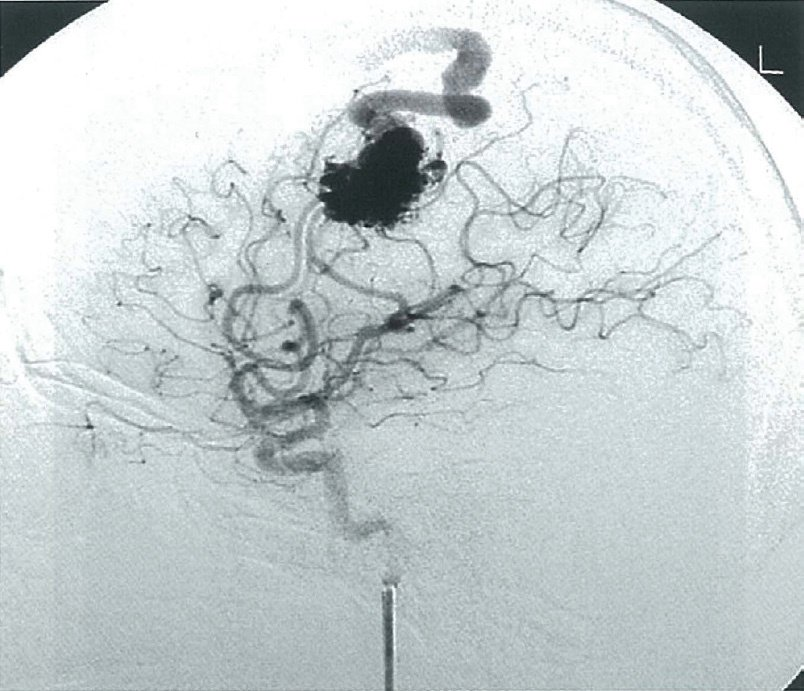
ａ 頭 痛
ｂ 振 戦
ｃ 片麻痺
ｄ 結膜充血
ｅ けいれん
✅
ａ 頭 痛
ｃ 片麻痺
ｅ けいれん
ｃ 片麻痺
ｅ けいれん
脳AVM（脳動静脈奇形）の初発症状：頭痛・けいれん・片麻痺（出血が多い）
理解度：
📝 メモ
🧠 脳AVM
Q159参照。脳AVM初発症状：出血（頭痛・片麻痺）＞けいれん。振戦・結膜充血はAVMの症状ではない。Q.217(104C-24)正答率 98%
突然意識消失。高血圧既往（未治療）。CT：脳内高吸収域。診断はどれか。
ａ 脳出血
ｂ 脳梗塞
ｃ 低酸素血症
ｄ 糖尿病性昏睡
ｅ 症候性てんかん
✅
a 脳出血
高血圧未治療・突然発症・CT高吸収域→高血圧性脳出血
理解度：
📝 メモ
🧠 高血圧性脳出血のCT
脳出血：CTで急性期は高吸収域（白く映る）。高血圧未治療が最大のリスク。好発：被殻（最多）・視床・橋・小脳・皮質下。Q.218(104E-64)正答率 67%
連問（104E-64）。意識レベルはJCSでどれか。
ａ Ⅰ-1
ｂ Ⅰ-3
ｃ Ⅱ-10
ｄ Ⅱ-20
ｅ Ⅲ-100
✅
d Ⅱ-20
連問の意識状態の評価
理解度：
📝 メモ
🧮 JCS
JCS（Japan Coma Scale）：Ⅰ：刺激なし覚醒（1:見当識あり、2:見当識なし、3:名前・生年月日不明）
Ⅱ：刺激で覚醒（10:呼びかけで開眼、20:大声・身体刺激で開眼、30:繰り返し刺激で開眼）
Ⅲ：刺激でも覚醒しない（100:痛みで払いのける、200:払いのけない、300:全く反応なし）
Q.219(104E-65)正答率 91%
連問（104E-65）。瞳孔不同の原因はどれか。
ａ 視神経障害
ｂ Adie 症候群
ｃ 動眼神経麻痺
ｄ Horner 症候群
ｅ Argyll Robertson 瞳孔
✅
c 動眼神経麻痺
連問（テント切痕ヘルニア）→同側動眼神経圧迫→瞳孔不同（同側散瞳）
理解度：
📝 メモ
🧠 Q18・Q45参照
テント切痕ヘルニア→動眼神経麻痺→同側散瞳（瞳孔不同）。Adie症候群：片側散瞳だが意識正常。Horner：縮瞳。Q.220(104E-66)📷 画像正答率 95%
連問（104E-66）。次に行う検査はどれか。
ａ 脳 波
ｂ 脳脊髄液
ｃ 脳血管造影
ｄ 頸部超音波
ｅ 頭部MRI
✅
c 脳血管造影
テント切痕ヘルニアの原因（動脈瘤？）確認→脳血管造影
理解度：
📝 メモ
🧠 検査選択
連問文脈から脳血管造影が適切（動脈瘤・AVM・血管狭窄の評価）。CT/MRIの次の精査として選択。Q.221(104G-44)2択正答率 75%
昼食中に突然の激しい頭痛→意識低下。みられる症候はどれか。2つ選べ。
ａ 兎 眼
ｂ 除皮質硬直
ｃ 一側の眼球突出
ｄ Brudzinski 徴候
ｅ 一側の散瞳と眼瞼下垂
✅
ｄ Brudzinski 徴候
ｅ 一側の散瞳と眼瞼下垂
ｅ 一側の散瞳と眼瞼下垂
SAH→項部硬直・Brudzinski徴候（髄膜刺激）＋動眼神経麻痺（散瞳）
理解度：
📝 メモ
📋 SAHの所見
| 所見 | SAH？ |
| Brudzinski徴候 | ○（髄膜刺激） |
| 一側散瞳・眼瞼下垂 | ○（動眼神経麻痺・テント切痕ヘルニア） |
| 兎眼 | ✕（顔面神経麻痺の所見） |
| 除皮質硬直 | ×（重篤な脳幹障害のみ） |
| 眼球突出 | ✕（CCF・眼窩内腫瘍） |
Q.222(104H-28)正答率 97%
夕食中に頭痛・気分不良（Q214と同テーマ）。今後起こりやすい症候はどれか。
ａ 意識障害
ｂ 四肢麻痺
ｃ 血圧低下
ｄ 体温上昇
ｅ 感覚障害
✅
a 意識障害
Q214と同問。小脳出血拡大→脳幹圧迫→意識障害
理解度：
📝 メモ
🧠 Q214参照
同テーマ。小脳出血→意識障害（脳幹圧迫）が最も危険。Q.223(104I-40)正答率 94%
全失語＋右片麻痺（突然）。意識障害。脈拍不整。最も考えられるのはどれか。
ａ 脳塞栓症
ｂ ラクナ梗塞
ｃ もやもや病
ｄ 脳動脈瘤破裂
ｅ 高血圧性脳出血
✅
a 脳塞栓症
Q212と同テーマ。全失語＋右片麻痺＋心房細動（不整脈）→心原性脳塞栓症
理解度：
📝 メモ
🧠 Q212参照
全失語＋右片麻痺＋心房細動（脈不整）→脳塞栓症。突然発症・大梗塞が特徴。Q.224(103A-7)正答率 88%
心房細動を有する脳梗塞患者の再発予防薬はどれか。
ａ 止血薬
ｂ 抗凝固薬
ｃ 血栓溶解薬
ｄ 抗血小板薬
ｅ カルシウム拮抗薬
✅
b 抗凝固薬
心房細動→心原性脳塞栓症の再発予防→抗凝固薬（ワルファリン・DOAC）
理解度：
📝 メモ
🧠 脳梗塞再発予防
心房細動＋脳梗塞→抗凝固薬（DOAC/ワルファリン）。アテローム→抗血小板薬（アスピリン・クロピドグレル）。両方同時は出血リスク上昇。Q.225(103A-37)📷 画像正答率 90%
脳梗塞後右片麻痺・構音障害。発熱・喘鳴・呼吸困難。肺炎の種類はどれか。
ａ 閉塞性肺炎
ｂ 上気道狭窄
ｃ 間質性肺炎
ｄ 嚥下性肺炎
ｅ 心原性肺水腫
✅
d 嚥下性肺炎
脳梗塞後の嚥下障害→誤嚥→嚥下性（誤嚥性）肺炎
理解度：
📝 メモ
🧠 誤嚥性肺炎
誤嚥性肺炎：脳卒中後嚥下障害→口腔・咽頭分泌物・食物の誤嚥→下葉（重力依存部位）に炎症。口腔ケア・摂食嚥下リハビリが予防。Q.226(103D-38)📷 画像正答率 89%
MRI（A）と左頸動脈造影（B）。診断はどれか。
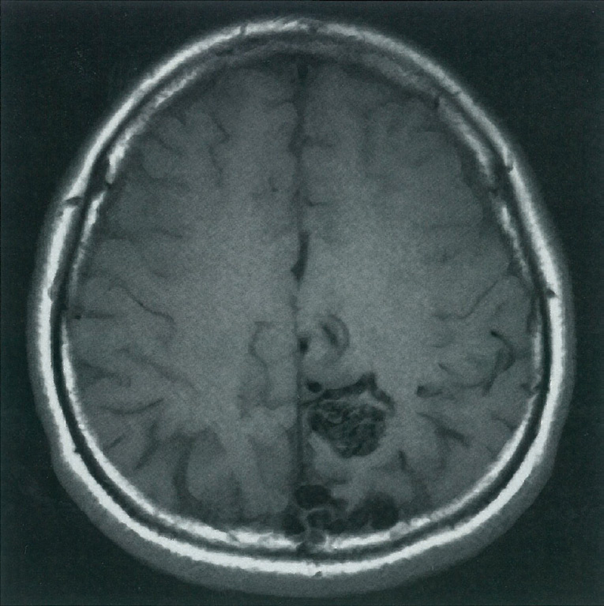
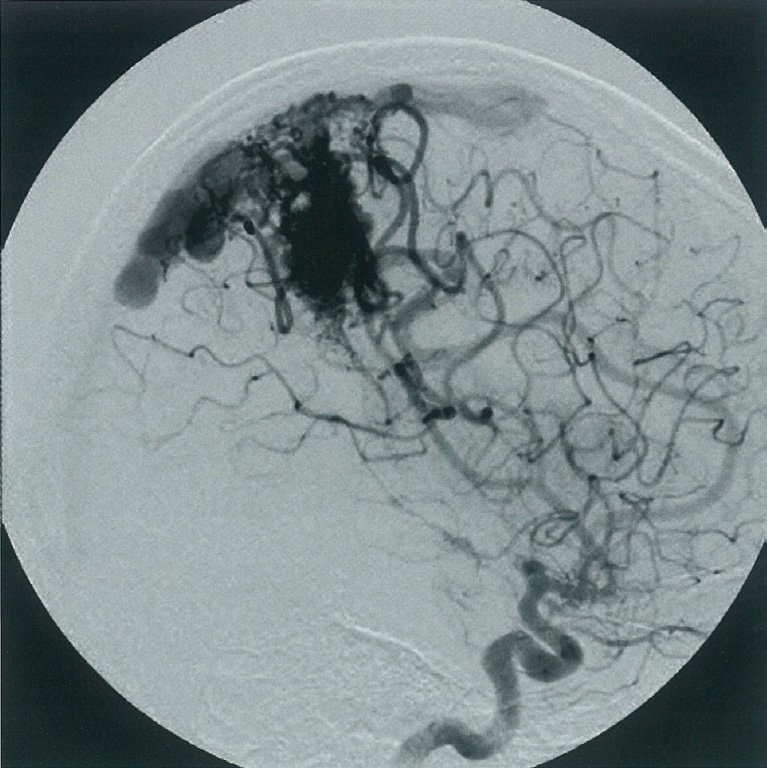
ａ もやもや病
ｂ 静脈洞血栓症
ｃ 脳動静脈奇形
ｄ 硬膜動静脈瘻
ｅ Sturge-Weber 症候群
✅
c 脳動静脈奇形
頸動脈造影で動脈早期静脈還流（nidus）→脳AVM
理解度：
📝 メモ
🧠 Q159・Q216参照
脳AVM：血管造影で早期静脈充盈（nidus）が特徴的所見。MRI：異常血管束の流空像。Q.227(103E-11)2択正答率 88%
治療法の選択で正しい組合せはどれか。2つ選べ。
ａ 橋出血 ――――――――― 穿頭血腫除去
ｂ 脳動脈瘤 ―――――――― 開頭クリッピング
ｃ 脳ヘルニア ――――――― 高圧酸素療法
ｄ 出血性脳梗塞 ―――――― 血栓溶解療法
ｅ 内頸動脈狭窄 ―――――― 内膜剝離術
✅
ｂ 脳動脈瘤 ―――――――― 開頭クリッピング
ｅ 内頸動脈狭窄 ―――――― 内膜剝離術
ｅ 内頸動脈狭窄 ―――――― 内膜剝離術
脳動脈瘤→外科的（クリッピング）または血管内（コイル）治療
理解度：
📝 メモ
📋 脳血管障害の治療
| 疾患 | 治療 |
| 橋出血 | 保存的（外科的適応なし） |
| 脳動脈瘤 | クリッピング術・コイル塞栓術 |
| 脳ヘルニア | 浸透圧利尿薬・外科（状況による） |
| 出血性脳梗塞 | 抗凝固薬は禁忌または慎重 |
| 内頸動脈狭窄 | CEA（頸動脈内膜切除術）・CAS |
Q.228(103E-22)3択正答率 94%
海綿静脈洞を通るのはどれか。3つ選べ。
ａ 視神経
ｂ 動眼神経
ｃ 滑車神経
ｄ 外転神経
ｅ 前庭神経
✅
ｂ 動眼神経
ｃ 滑車神経
ｄ 外転神経
ｃ 滑車神経
ｄ 外転神経
海綿静脈洞：CN III・IV・V1・VI・内頸動脈が通過
理解度：
📝 メモ
🧠 海綿静脈洞
海綿静脈洞通過：CN III（動眼）・IV（滑車）・V1（眼神経）・VI（外転）＋内頸動脈。海綿静脈洞血栓症：これら全ての障害→眼球運動障害・眼球突出・顔面感覚障害。Q.229(103G-59)正答率 99%
連問（103G-59〜61）。障害されているのはどれか。
ａ 視神経
ｂ 動眼神経
ｃ 滑車神経
ｄ 外転神経
ｅ 迷走神経
✅
b 動眼神経
連問の所見（眼瞼下垂・散瞳・眼球運動障害）→動眼神経麻痺
理解度：
📝 メモ
🧠 Q108参照
動眼神経麻痺の所見：眼瞼下垂・散瞳・外下転位。原因：後交通動脈瘤（SAH前駆）。Q.230(103G-60)正答率 98%
連問（103G-60）。意識レベルはJCSでどれか。
ａ Ⅰ-3
ｂ Ⅱ-10
ｃ Ⅱ-30
ｄ Ⅲ-100
ｅ Ⅲ-300
✅
a Ⅰ-3
連問の患者（意識はほぼ清明だが名前・生年月日が不明）→JCS I-3
理解度：
📝 メモ
🧮 JCS I-3
JCS I（刺激なしで覚醒）：I-1：見当識あり
I-2：見当識なし（日時・場所不明）
I-3：名前・生年月日が言えない
Q.231(103G-61)2択正答率 41%
連問（103G-61）。入院後意識低下・左片麻痺。考えられるのはどれか。2つ選べ。
ａ 小脳出血
ｂ 脳ヘルニア
ｃ 出血性脳梗塞
ｄ 脳血管攣縮
ｅ 細菌性髄膜炎
✅
ｂ 脳ヘルニア
ｄ 脳血管攣縮
ｄ 脳血管攣縮
SAH後の悪化：脳血管攣縮（遅発性脳虚血）または脳ヘルニア（血腫拡大）
理解度：
📝 メモ
🧠 SAH後の悪化要因
SAH入院後悪化：①急性水頭症（早期）②脳血管攣縮（4〜14日）③再破裂③脳ヘルニア。左片麻痺→攣縮による脳虚血または脳ヘルニアで対側麻痺。Q.232(102C-30)正答率 99%
連問。全身けいれんが持続。投与すべき薬剤はどれか。
ａ モルヒネ
ｂ ジアゼパム
ｃ アトロピン
ｄ プレドニゾロン
ｅ サクシニルコリン
✅
b ジアゼパム
てんかん重積（痙攣持続）→ジアゼパム（ベンゾジアゼピン）静注が第一選択
理解度：
📝 メモ
🧠 てんかん重積の治療
てんかん重積（5分以上の持続）→ジアゼパム（またはロラゼパム）静注→無効なら抗てんかん薬（フェニトイン・レベチラセタム）。Q240も同テーマ。Q.233(102C-31)正答率 97%
連問（102C-31）。頭部単純CTから最も考えられるのはどれか。
ａ 髄膜炎
ｂ 脳出血
ｃ 脳腫瘍
ｄ 脳梗塞
ｅ くも膜下出血
✅
e くも膜下出血
星芒状・脳槽の高吸収域→くも膜下出血のCT所見
理解度：
📝 メモ
🧠 SAHのCT所見
SAH：CT（急性期）でシルビウス裂・脳底槽・脳溝にびまん性高吸収域（血液が白く映る）。Fisher grade分類で血腫量を評価→攣縮リスク予測。Q.234(102G-57)2択正答率 88%
左中大脳動脈梗塞（発症3日目）。行うべきリハビリはどれか。2つ選べ。
ａ 経口摂取
ｂ 立位訓練
ｃ 関節可動域訓練
ｄ 段階的坐位訓練
ｅ ポータブルトイレでの排尿訓練
✅
ｃ 関節可動域訓練
ｄ 段階的坐位訓練
ｄ 段階的坐位訓練
急性期（3日目）：ROM訓練（拘縮予防）＋段階的坐位訓練から開始
理解度：
📝 メモ
🧠 急性期リハビリ（3日目）
発症3日目の急性期リハ：関節可動域（ROM）訓練（拘縮予防）＋段階的坐位訓練（ベッドアップ→端坐位）。立位・歩行・書字は安定後に。Q.235(102I-14)2択正答率 63%
右片麻痺5名の頭部単純CT①〜⑤。発症後24時間以内に撮影されたCTはどれか。2つ選べ。
ａ ①
ｂ ②
ｃ ③
ｄ ④
ｅ ⑤
✅
ｃ ③
ｄ ④
ｄ ④
脳梗塞の急性期（24h以内）：CT上明確な変化なし。または初期低吸収（輪郭不鮮明）
理解度：
📝 メモ
🧠 脳梗塞のCT経時変化
急性期（24h以内）：CT所見軽微または正常（MRIのDWIが感度高い）。24〜72h以降：低吸収域が明確化。慢性期：低吸収域（壊死）＋体積減少。③④は早期変化のみ見られるものを選ぶ。Q.236(102I-45)📷 画像正答率 83%
右眼一過性視力障害＋左上下肢脱力反復→脳血管造影で想定される病変はどれか。
ａ 右総頸動脈閉塞
ｂ 右内頸動脈起始部狭窄
ｃ 右内頸動脈終末部狭窄
ｄ 右中大脳動脈狭窄
ｅ 右後大脳動脈閉塞
✅
b 右内頸動脈起始部狭窄
右眼黒内障（眼動脈TIA）＋左上下肢TIA→右内頸動脈狭窄（同側眼動脈＋対側肢）
理解度：
📝 メモ
🧠 内頸動脈狭窄のTIA
右内頸動脈狭窄→右眼動脈（眼動脈はICAの最初の枝）へのTIA（黒内障）＋右大脳→左上下肢TIA。同側眼＋対側肢のTIAは内頸動脈狭窄の典型。Q.237(102I-46)📷 画像正答率 98%
交通外傷後46日目。右眼球突出＋拍動性雑音。治療はどれか。
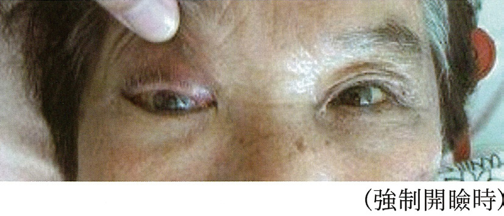
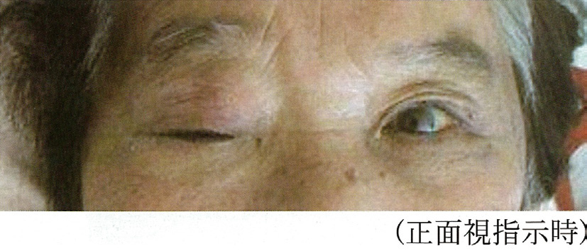
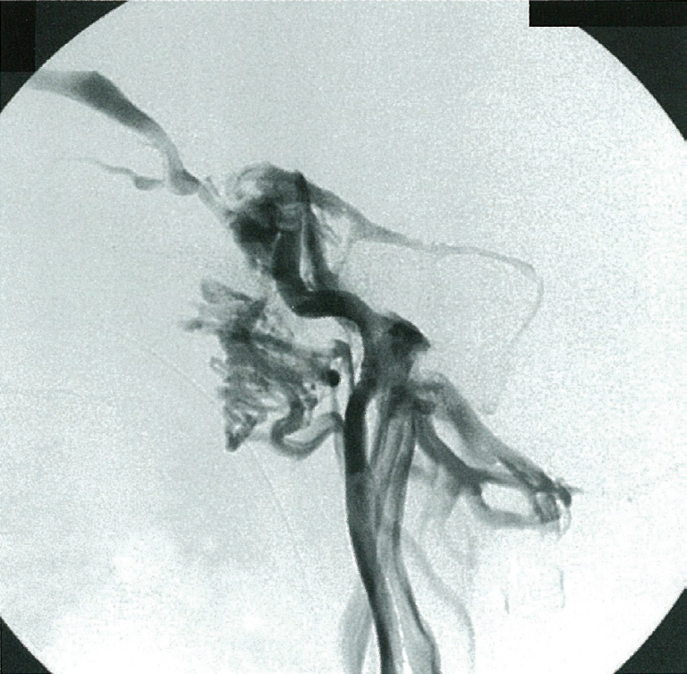
ａ 副腎皮質ステロイド点眼
ｂ 甲状腺ホルモン薬投与
ｃ 抗けいれん薬投与
ｄ 放射線治療
ｅ 瘻孔塞栓術
✅
e 瘻孔塞栓術
Q146・Q155と同テーマ。外傷性CCF→瘻孔塞栓術（血管内治療）
理解度：
📝 メモ
🧠 Q146・Q155参照
外傷性CCF（頸動脈海綿静脈洞瘻）：瘻孔塞栓術（血管内治療）が標準治療。Q.238(101A-42)正答率 73%
右眼瞼下垂・右眼球運動障害。MRI：動脈瘤を示唆。次に行う検査はどれか。
ａ 生 検
ｂ 筋電図
ｃ 血管造影
ｄ ホルモン定量
ｅ ポジトロンエミッション断層撮影〈PET〉
✅
c 血管造影
動眼神経麻痺（右眼瞼下垂・運動障害）→動脈瘤疑い→脳血管造影（金標準）
理解度：
📝 メモ
🧠 Q131参照
動眼神経麻痺→動脈瘤を疑う→脳血管造影（DSA）が動脈瘤同定の金標準。3D-CTAも可能。Q.239(101B-42)📷 画像正答率 88%
Willis動脈輪の模式図。後交通動脈はどれか。
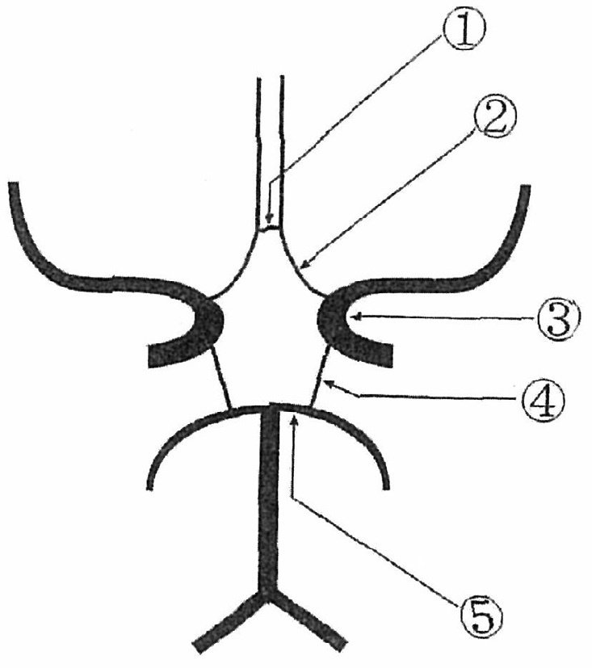
ａ ①
ｂ ②
ｃ ③
ｄ ④
ｅ ⑤
✅
d ④
Willis輪で内頸動脈と後大脳動脈をつなぐ橋渡し血管→後交通動脈
理解度：
📝 メモ
🧠 Willis輪の解剖
後交通動脈（PComA）：内頸動脈（ICA）と後大脳動脈（PCA）をつなぐ。後交通動脈瘤→動眼神経麻痺。Q138・Q131参照。Q.240(101B-117)正答率 99%
SAH患者がけいれん重積状態。まず投与する薬剤はどれか。
ａ ドパミン
ｂ ヘパリン
ｃ アトロピン
ｄ ジアゼパム
ｅ ペンタゾシン
✅
d ジアゼパム
Q232と同テーマ。けいれん重積→ジアゼパム静注が第一選択
理解度：
📝 メモ
🧠 Q232参照
けいれん重積→ジアゼパム（ベンゾジアゼピン）静注。その後ペントバルビタール・フェニトイン等を追加。Q.241(101F-26)正答率 85%
心原性脳塞栓症を起こす頻度が最も高いのはどれか。
ａ 三尖弁閉鎖不全症
ｂ 僧帽弁閉鎖不全症
ｃ 僧帽弁狭窄症
ｄ 大動脈弁閉鎖不全症
ｅ 大動脈弁狭窄症
✅
c 僧帽弁狭窄症
僧帽弁狭窄症→左心房拡大・血流停滞→血栓形成→脳塞栓症
理解度：
📝 メモ
🧠 弁膜症と脳塞栓
僧帽弁狭窄症（MS）：左心房拡大・血流停滞→心房細動合併が多い→心房内血栓→脳塞栓症。リウマチ熱後が多い。僧帽弁閉鎖不全：血栓形成リスクはMSより低い。🎯 国試ポイント
僧帽弁狭窄症（MS）が心原性脳塞栓症の最多原因弁膜症（心房細動を合併しやすい）。現代では非弁膜症性心房細動が最多だが、弁膜症としてはMSが最多。Q.242(100A-46)📷 画像正答率 42%
6歳女児。頭痛・嘔吐・歩行時ふらつき。右上下肢運動失調。MRI（A・B）。診断はどれか。
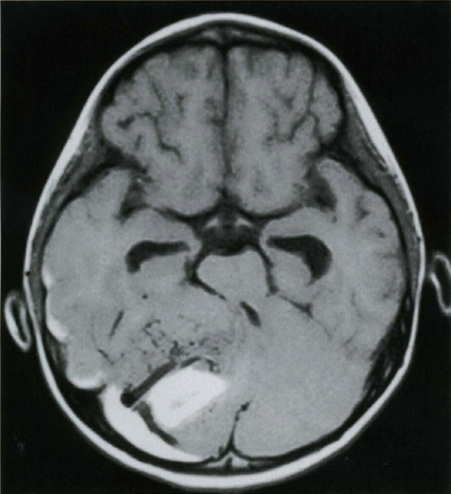
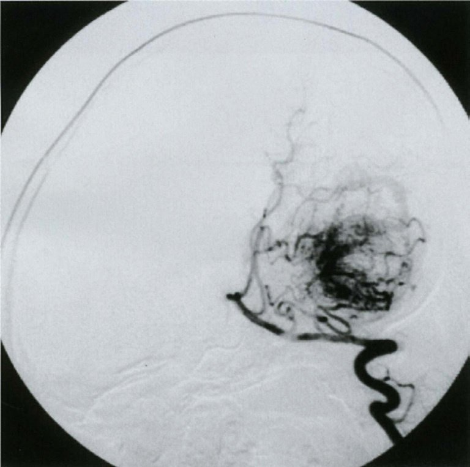
ａ 髄芽腫
ｂ 星細胞腫
ｃ 脳動脈瘤
ｄ もやもや病
ｅ 脳動静脈奇形
✅
e 脳動静脈奇形
小児・小脳病変・血管造影でAVM様所見→脳AVM
理解度：
📝 メモ
🧠 Q159・Q216参照
小児の右小脳失調＋MRIで異常血管束→脳AVM（脳動静脈奇形）。髄芽腫は悪性腫瘍（小脳虫部）。Q.243(100B-49)正答率 94%
内頸動脈海綿静脈洞瘻でみられるのはどれか。
ａ 縮 瞳
ｂ 眼球突出
ｃ 視力低下
ｄ 角膜潰瘍
ｅ 視野障害
✅
b 眼球突出
CCF→静脈圧上昇→眼窩内静脈還流障害→眼球突出＋結膜充血
理解度：
📝 メモ